Our Everest Base Camp trek with Namaste Hiking Trek went beyond every expectation we had. What first pulled us towards them was their strict safety protocol and personal care. From the landing at Lukla to reaching Everest Base Camp (5,364m) and Kala Patthar, Sagar and the team made sure we were comfortable, safe, and hydrated every single day!
Everest Region • Classic Himalayan Expedition
5.0
reviews on TripAdvisor
5.0
169 reviews on Google
Everest View Trek
Ideal for travelers short on time: trek to Sherpa capital Namche Bazaar and the world-famous Hotel Everest View (3,880m) for iconic mountain panoramas.

Travelers' Choice
Best of the Best 2026


Key Trip Facts
Duration
7 days
Difficulty
Moderate
Max Altitude
~3,880 m
Destination
Nepal
Activity
Trekking
Accommodation
Hostels & Guesthouses
Transport
Both way Flight
Meals
B.D.L.
Season
Sep-October & Mar-May
Trek Starts
Lukla
Trek End At
Lukla
Trek Region
Everest
Package Start Point
Kathmandu
Package End Point
Kathmandu
Trek Overview
The Everest View Trek is a rewarding short Himalayan journey through the heart of Nepal's Khumbu region, taking you from the mountain airstrip of Lukla through pine-scented river gorges, vibrant Sherpa settlements, Buddhist monasteries, and some of the most celebrated mountain viewpoints in the world. Designed specifically for travelers who want to experience the grandeur of Mount Everest without the strenuous physical commitment and extreme altitude of the 14-day Base Camp expedition, this 7-day route culminates at the iconic Hotel Everest View at 3,880 m (12,729 ft).
While the summit of Mount Everest stands at an imposing 8,848.86 m, the perspective from the high ridge above Namche Bazaar is widely regarded as one of the finest in the Himalayas. From the panoramic terrace of Hotel Everest View, Everest, Lhotse (8,516 m), Nuptse (7,861 m), Thamserku (6,623 m), and the majestic soaring spire of Ama Dablam (6,812 m) form an uninterrupted high-altitude amphitheater. In many ways, this vantage point offers a broader and more photogenic view of Everest than Base Camp itself, where the summit is often obscured by Nuptse's western ridge.
The journey is as much about cultural immersion as it is about mountain landscapes. You follow the Dudh Koshi River Valley across high steel suspension bridges draped with colorful prayer flags, enter Sagarmatha National Park (a UNESCO World Heritage Site), walk past sacred Mani walls and chortens, and spend nights in authentic, locally operated Sherpa mountain teahouses. In Namche Bazaar—the historic trading hub and Sherpa capital—and the traditional twin villages of Khumjung and Khunde, the trail becomes a living encounter with Sherpa heritage, mountaineering lore, and warm Himalayan hospitality.
Our 7-day itinerary is intentionally paced to maximize acclimatization safety and travel comfort. By scheduling three consecutive nights in Namche Bazaar at 3,440 m, our route strictly follows the proven mountaineering rule of "climb high, sleep low." You undertake an active day hike up to the Everest View Hotel and traditional villages before returning to sleep at a stable altitude, providing an unhurried, luxurious introduction to the world's highest mountains.
What the Everest View Trek is really like?
Trekking through the Khumbu region on the 7-day Everest View Trek provides an intimate, deeply immersive taste of Himalayan adventure without requiring technical mountaineering experience or extreme high-altitude endurance. Each morning begins with crisp mountain air, steaming cups of milk tea, and panoramic views of rocky peaks catching the early morning sunlight. Walking days typically start around 7:30 to 8:00 AM, following well-defined stone trails that wind alongside the glacial torrent of the Dudh Koshi River before climbing through forested hillsides to Namche Bazaar.
Expect approximately 3 to 6 hours of walking on most trekking days, combining gradual riverside paths, stone staircases, thrilling suspension bridges, and sustained uphill ascents. The terrain does not involve technical climbing, glacier walking, or ropes, but the elevation gain requires reasonable cardiovascular endurance. The physical highlight is the steady 2.5-hour ascent from the Hillary Suspension Bridge through pine forests up to Namche Bazaar, where you gain approximately 600 vertical meters. Along the way, you share the stone trail with friendly local Sherpa families, trekking groups from around the globe, and sturdy pack trains of dzo and mules carrying supplies.
Accommodations along the route consist of welcoming, family-run mountain teahouses in Phakding and Namche Bazaar. Unlike higher, more remote sections of the Khumbu, lodges in these lower settlements are well-developed, offering comfortable twin-bed rooms (frequently with attached private bathrooms), electric charging facilities, hot gas showers, and heated dining halls warmed by wood-burning stoves. In the evenings, trekkers gather around the stove to enjoy hearty Nepali Dal Bhat, hot noodle soups, and freshly baked bakery treats while discussing the day's journey.
From Lukla to Namche Bazaar and Hotel Everest View
The classic route follows the historical approach trail carved out by early mountaineering expeditions. After an exhilarating 30-minute mountain flight from Kathmandu (or Ramechhap/Manthali during peak seasons) into Tenzing-Hillary Airport at Lukla (2,860 m), you meet your guide and porters and descend through gentle farmland to Phakding (2,610 m). The lower altitude of Phakding allows for an easy first day, easing your muscles into the walking rhythm before the elevation increases.
On Day 2, the trail enters Sagarmatha National Park at Monjo, crossing the famous double suspension bridges high above the river chasm before tackling the steep forested zig-zags up to Namche Bazaar (3,440 m). Emerging onto the rim of Namche's natural mountain amphitheater is an unforgettable milestone. Colorful tin-roofed lodges, bakeries, cafes, gear shops, and prayer flag poles cascade down the terraced bowl, with the soaring white pyramid of Kongde Ri rising behind.
The architectural climax of the journey takes place on Day 4, when you hike up past the Syangboche airstrip to Hotel Everest View (3,880 m). Perched atop a forested ridge, this world-renowned landmark provides an unobstructed, front-row panorama of Mount Everest, Lhotse, and Ama Dablam. Savoring hot coffee on the hotel's sunlit terrace while admiring the world's highest peak is widely considered one of the pinnacle experiences in the entire Himalayas.
More than a mountain trek: Sherpa Heritage & Sacred Khumbu
While the jagged skyline of Everest commands international attention, the living soul of this journey lies in the Sherpa villages and Tibetan Buddhist cultural landmarks of the Khumbu Valley. The Sherpa people migrated from eastern Tibet over five centuries ago, creating a resilient, deeply spiritual mountain society in harmony with the extreme environment. Throughout the trail, you encounter physical expressions of this sacred relationship: carved mani stones engraved with the compassion mantra Om Mani Padme Hum, whitewashed stupas (chortens), spinning prayer wheels, and thousands of multi-colored prayer flags carrying blessings across the mountain valleys.
During our exploration beyond Hotel Everest View, we visit the serene twin villages of Khumjung (3,790 m) and Khunde (3,840 m). Surrounded by stone-walled potato plots and sacred juniper trees beneath Mount Khumbila, these tranquil settlements offer a glimpse into authentic Sherpa village life away from the commercial trekking thoroughfare. In Khumjung, you can visit the ancient Khumjung Gompa, famous for housing an enigmatic preserved "Yeti Scalp" relic, as well as the Hillary School, founded in 1961 by Sir Edmund Hillary. In neighboring Khunde, the Khunde Hospital stands as a testament to the enduring humanitarian bond between Himalayan mountaineers and local communities.
Is the Everest View Trek right for you?
The Everest View Trek is exceptionally well-suited for travelers seeking a world-class Himalayan trekking experience without committing to a grueling multi-week expedition. With a maximum elevation of 3,880 m at Hotel Everest View and a highest overnight sleeping elevation of 3,440 m in Namche Bazaar, the route stays well below the 5,000+ meter threshold where severe acute mountain sickness (AMS) risks multiply significantly. This makes it an ideal adventure for active beginners, couples, photographers, busy professionals with limited vacation time, and families trekking with teenagers.
While moderate in difficulty, the trek still involves walking 8 to 12 kilometers per day over rocky trails, ascending steep stone staircases, and navigating thinner mountain air. Preparation should include regular cardiovascular workouts (hiking, jogging, stair climbing) for 4 to 6 weeks before departure. If you are looking for an inspiring, comfortable, and culturally enriching encounter with Mount Everest that balances adventure with reliable teahouse comfort, this 7-day trek is the ultimate Himalayan introduction.
Everest View Trek Highlights
The Everest View Trek brings together the very finest cultural, scenic, and natural experiences of Nepal's legendary Khumbu region within a well-paced, accessible 7-day schedule. Instead of rushing toward extreme high altitudes, this route allows you to savor every stage of the classic Himalayan journey in depth.
From the thrilling mountain flight into Lukla to the peaceful Sherpa villages of Khumjung and the world-class panoramas from Hotel Everest View, these are the sixteen defining experiences that make this trek one of the most rewarding short Himalayan journeys in the world.
Scenic Mountain Flight into Lukla (2,860 m)
The Everest View adventure begins with an unforgettable mountain flight into Tenzing-Hillary Airport in Lukla (2,860 m / 9,383 ft), the celebrated gateway to the Khumbu. Operating out of Kathmandu or Ramechhap/Manthali, the twin-otter aircraft flies parallel to the snow-crested Himalayan range, treating passengers to breathtaking aerial views of deep green river canyons, tiered terrace farms, and soaring glaciated peaks. Touching down on Lukla's dramatic short-sloping runway carved into the hillside is a landmark mountaineering experience in itself. After deplaning into the crisp, cool Himalayan air, you meet your dedicated Sherpa trekking crew, complete a final daypack check, and begin the gentle introductory descent along the Dudh Koshi valley. Because mountain flights are strictly weather-dependent, building buffer flexibility into your overall Nepal itinerary ensures a completely relaxed, stress-free start.
Trek Along the Glacial Dudh Koshi River Valley
From Lukla down to Phakding (2,610 m / 8,563 ft) and onward toward Monjo, the trail traces the rushing, milky-white waters of the glacial Dudh Koshi ("Milk River"). Fed directly by the melting glaciers of the high Himalayas, the roaring river creates a natural corridor through aromatic forests of blue pine, rhododendron, and Himalayan birch. Trekkers walk past traditional stone-walled homesteads, hand-carved Buddhist mani stones engraved with sacred mantras, and terraced plots of mountain potatoes and barley. The trail features a gentle rhythm of undulating riverside paths, stone-paved staircases, and quiet hamlets like Ghat and Toktok. This introductory terrain offers the perfect opportunity to dial in your walking pace, test your footwear and trekking poles, and absorb the serene, unhurried rhythm of mountain life.
Cross Thrilling High Suspension Bridges
Suspension bridges spanning dizzying river gorges are among the most exhilarating and iconic trademarks of the Everest region. Throughout the lower valley, you cross multiple high-tensile steel cable bridges strung dramatically above the roaring rapids, adorned with thousands of fluttering Tibetan prayer flags carrying blessings on the wind. The most famous is the soaring Hillary Suspension Bridge, suspended over 100 meters above the canyon floor just before the climb to Namche Bazaar. Crossing these bridges is thrilling yet completely secure. Our guides practice strict mountain trail etiquette: trekkers always give right-of-way to approaching yak, dzo, and mule pack trains by moving promptly to the uphill mountain wall side—never standing near the outer edge—ensuring safe, seamless passage across every span.
Enter Sagarmatha National Park (UNESCO Site)
Just past the tranquil riverside village of Monjo (2,835 m), you pass through the official entrance gate and checkpoint of Sagarmatha National Park. Inscribed as a UNESCO World Heritage Site in 1979 for its outstanding universal natural value, this protected 1,148-square-kilometer sanctuary encompasses dramatic ecological zones ranging from temperate pine forests to the highest glaciated summits on Earth. Here, our guides register your Sagarmatha National Park Entry Permit and local Khumbu Pasang Lhamu Rural Municipality card. The park enforces strict environmental regulations to safeguard fragile alpine ecosystems, preserve native wildlife habitats, and protect rare Himalayan flora. Walking these pristine trails reinforces Namaste Hiking Trek's firm commitment to Leave No Trace ethics and eco-conscious mountain stewardship.
Namche Bazaar: Vibrant Sherpa Capital (3,440 m)
Nestled within a natural horseshoe-shaped amphitheatre against the steep rocky slopes of Kongde Ri, Namche Bazaar (3,440 m / 11,286 ft) is the legendary historic capital, trading crossroads, and cultural heart of the Khumbu Sherpa. Emerging from the forested trail onto Namche's stone-paved steps reveals a vibrant mountain settlement like no other. Multistory stone lodges, German bakeries with freshly baked apple strudel, artisan coffee bars, gear shops, and handicraft boutiques line the narrow winding streets. On weekends, regional traders gather at the lively Saturday market. Namche combines traditional Sherpa hospitality with surprisingly modern comforts, including reliable Wi-Fi, laundry facilities, gear rental shops, and ATMs. It serves as our central base camp for three nights, providing warmth, community, and unforgettable mountain charm.
Three Nights in Namche for Optimal Acclimatization
Acclimatization is the single most critical factor in high-altitude trekking success and comfort. While basic operators rush trekkers through, our Everest View itinerary features three consecutive nights based in Namche Bazaar (3,440 m). This provides an unhurried, scientifically proven acclimatization profile based on the golden mountaineering principle of "climb high, sleep low." On Days 3 and 4, we take active panoramic day hikes up to Syangboche (3,780 m) and Hotel Everest View (3,880 m). Gaining altitude during the day naturally stimulates your body to produce oxygen-carrying red blood cells, while returning to Namche's richer atmospheric pressure for sleep allows deep physiological recovery. This ensures exceptional energy levels, peaceful sleep, and minimal risk of altitude-related headaches or discomfort.
Terrace Panoramas from Hotel Everest View (3,880 m)
The crown jewel and defining highlight of the entire trek is the memorable morning excursion to the world-renowned Hotel Everest View (3,880 m / 12,730 ft). Officially listed in the Guinness Book of World Records as one of the highest-placed luxury hotels on the planet, it sits atop a panoramic ridge above Syangboche. Relaxing on the hotel's sun-drenched outdoor stone terrace with a cup of hot French-press coffee or fragrant Himalayan herbal tea is an unparalleled sensory experience. Directly across the valley, Mount Everest, Lhotse, Nuptse, and the breathtaking spire of Ama Dablam dominate the skyline in crystal-clear high-definition detail. The setting offers an extraordinary opportunity to photograph and savor the majestic scale of the Himalayas in total comfort before continuing your scenic ridge walk.
Spectacular Vistas of Mount Everest & Himalayan Giants
While the Everest Base Camp trek requires trekking for days into a deep glacial canyon where Everest's summit is hidden behind Nuptse, the Everest View Trek viewpoints above Namche provide arguably the finest, most comprehensive mountain panoramas in Nepal. In a single 360-degree sweep, you can view the wind-whipped apex of Mount Everest (8,848.86 m), the imposing South Face of Lhotse (8,516 m), Nuptse (7,861 m), and the world's most photogenic mountain, Ama Dablam (6,812 m), rising like an sculpted ice obelisk. To the south, Thamserku (6,608 m) and Kusum Kanguru (6,367 m) display jagged fluted ice ridges, while the formidable wall of Kongde Ri (6,187 m) towers directly behind.
Traditional Villages of Khumjung & Khunde (3,790 m)
Leaving the ridge of Hotel Everest View, our route winds gently down into the broad, peaceful green valley housing the authentic Sherpa twin villages of Khumjung (3,790 m) and Khunde (3,840 m). Cradled beneath the sacred mountain peak of Mount Khumbila, these serene settlements provide a rare glimpse into authentic, everyday Himalayan community life far removed from commercial trekking paths. Walk along centuries-old dry-stone walls enclosing neat potato and buckwheat plots, past stone homesteads with traditional green-painted sheet roofs and carved wooden window frames. Yaks graze peacefully on terraced slopes while local Sherpa farmers tend their fields, illustrating the deep harmony between mountain culture and this awe-inspiring alpine environment.
Historic Khumjung Monastery & Sacred Yeti Scalp
In the center of Khumjung village stands the historic Khumjung Gompa, an ancient Tibetan Buddhist monastery founded over 400 years ago as the spiritual sanctuary of the valley. Surrounded by whispering juniper groves and prayer flag poles, the temple provides a serene setting for quiet reflection. Inside the dim, atmospheric prayer hall fragranced with butter lamps and incense, monks preserve vibrant wall frescoes depicting Buddhist deities, complex mandalas, and tantric masters. The monastery's most famous treasure is the enigmatic "Yeti Scalp"—a centuries-old domed relic of reddish-brown coarse hair secured within a padlocked glass display case. Visiting the gompa offers profound insight into the spiritual traditions and Buddhist cosmologies that sustain life in the Khumbu.
Sir Edmund Hillary School & Khunde Hospital Legacy
Beyond sheer mountain grandeur, the Khumjung and Khunde valley is home to one of the most inspiring philanthropic legacies in mountaineering history. Following his historic 1953 first ascent of Everest with Tenzing Norgay, Sir Edmund Hillary dedicated decades to improving the welfare of the Sherpa people through the Himalayan Trust. Trekkers visit the Khumjung Hillary School, established in 1961 as a simple one-room schoolhouse and now educating hundreds of students from kindergarten through high school. Nearby in Khunde stands Khunde Hospital, founded in 1966 to bring modern medical care, prenatal support, and vaccinations to remote Khumbu families. Experiencing this living legacy highlights the enduring partnership, gratitude, and mutual respect connecting international mountaineers with the Sherpa community.
Ever-Changing Alpine Landscapes from Lukla to Namche
Even across a compact 7-day itinerary, the geographical diversity of the trail is staggering. Beginning in the lush temperate lowlands near Lukla and Phakding, the route follows fertile river banks flanked by weeping willows, bamboo stands, and towering Himalayan blue pines. As the trail climbs steeply toward Namche Bazaar, the vegetation transitions through dense rhododendron and fir forests, which burst into fiery red, pink, and white blossoms during the spring trekking season. Above Namche, the tree line thins into subalpine scrub, fragrant dwarf juniper bushes, and windswept alpine pastures framed by colossal hanging glaciers. The return trek retraces these diverse biomes from a fresh visual angle, offering completely new perspectives of familiar valleys.
Comfortable Teahouse Living with Attached Bathrooms
Because the Everest View Trek stays strictly within the lower, best-developed corridor of the Khumbu region, travelers enjoy significantly higher standards of comfort than those on longer treks to Gorak Shep. Our selected mountain teahouses in Phakding and Namche Bazaar offer clean, cozy twin-bedded private rooms, often featuring attached flush toilets and hot showers. In the evenings, the communal dining hall becomes the welcoming social hub of the lodge, heated by a central wood or cast-iron stove. Trekkers gather to share stories, charge cameras and phones, sip warm lemon ginger honey tea, and enjoy comfortable, restful nights. This lodge-based style completely eliminates the hardships of camping while directly supporting local Sherpa families and community enterprises.
Hearty Mountain Cuisine & Genuine Sherpa Hospitality
Nutritious, energizing food is vital for daily mountain trekking. Khumbu teahouses take great pride in their surprisingly extensive menus, freshly prepared to order by experienced mountain cooks. The cornerstone of trekking nutrition is traditional Nepali Dal Bhat—a wholesome, balanced feast of steamed rice, spiced lentil soup, seasonal vegetables, spinach, and crispy papadum, served with unlimited complimentary refills. You will also enjoy Sherpa specialties like Syakpa (a hearty, warming potato and vegetable stew), handmade steamed or fried momos, noodle soups, Tibetan flatbread, porridge, and garlic broth renowned for assisting acclimatization. Paired with the heartfelt warmth, smiles, and legendary attentiveness of your Sherpa hosts, every meal becomes a memorable celebration of mountain culture.
Spot Protected Himalayan Wildlife Along Forest Trails
Sagarmatha National Park's strictly protected habitat provides a haven for diverse, rare Himalayan fauna. As you walk quietly along the forested trails between Phakding, Namche, and Khumjung, keep your eyes open and camera ready. On the precipitous rocky crags above the trail, you may spot herds of agile Himalayan tahr (wild mountain goats) navigating near-vertical cliffs with astonishing grace. The quiet pine and birch woods provide sanctuary for the shy, solitary musk deer and playful yellow-throated martens. High in the canopy, watch for Nepal's national bird, the Danphe (Himalayan Monal), whose shimmering rainbow plumage creates a spectacular flash of color, alongside blood pheasants, red-billed choughs, and majestic Himalayan griffon vultures soaring on thermal currents.
Short Duration with a Complete Himalayan Experience
The defining advantage of the Everest View Trek is that it distills the very finest elements of the Khumbu into a manageable, highly rewarding 7-day itinerary. Without taking two full weeks off work or pushing into the extreme cold and high-altitude risks of the 5,364-meter Base Camp, you experience the thrill of the Lukla mountain flight, cross suspension bridges, stay three nights in vibrant Namche Bazaar, and stand before world-class panoramas of Everest, Lhotse, and Ama Dablam. You explore authentic Sherpa villages, visit historic monasteries, and enjoy comfortable teahouse living with experienced guides and porters. It is the perfect, stress-free Himalayan trekking adventure for couples, families, photographers, and prepared first-time trekkers seeking extraordinary mountain memories.
At a glance: the highlights you will experience on the Everest View Trek
Hotel Everest View Terrace: Savor morning tea overlooking Mount Everest (8,848.86 m), Lhotse, and Ama Dablam from 3,880 m.
Namche Bazaar Hub: Three consecutive nights in the Khumbu's trading capital (3,440 m) with cafes, bakeries, and Sherpa markets.
Lukla Mountain Flight: Thrilling STOL aircraft flight into Tenzing-Hillary Airport (2,860 m), the gateway to Everest.
Hillary Suspension Bridge: Cross the famous high suspension bridge spanning the roaring Dudh Koshi river gorge.
Sagarmatha National Park: Trek through a UNESCO World Heritage landscape of pine and rhododendron forests beneath snow peaks.
Khumjung Village & Monastery: Explore the traditional green-roofed settlement and see the historic yeti scalp relic.
Hillary School & Khunde Hospital: Witness Sir Edmund Hillary's enduring philanthropic legacy in the high Himalayas.
Sherpa Culture & Buddhist Traditions: Pass ancient Mani stone walls (clockwise), chortens, and colorful prayer flags.
Comfortable Teahouse Living: Stay in the region's best-developed lodges with attached bathrooms and warm dining hall stoves.
Himalayan Wildlife: Spot Himalayan tahr, musk deer, and Nepal's national bird (Danphe) along forest trails.
Why Book the Everest View Trek with Namaste Hiking Trek?
Planning a Himalayan journey requires more than just an itinerary—it requires authentic local expertise, reliable logistics, fair treatment of mountain crew, and responsive care from people who live and work in Nepal. Here is why travelers worldwide trust Namaste Hiking Trek for their Khumbu adventure:
Local Sherpa Guides with 6 to 10+ Years Experience
Not seasonal hires—our lead guides (Sujan, Sharad, Bishal, Sandip, Biraj, Pradip) are licensed veterans who grew up in the Himalayas and undergo annual Wilderness First Aid certification.
100% Guaranteed Departures
Once your booking is confirmed, your trek runs. We never cancel departures due to low participant numbers, ensuring your international travel plans are completely secure.
Small Groups (Max 8) with Real-Time Profiles
We keep group sizes small for personalized pacing and intimate cultural encounters. On our live dates system, you can see group member profiles, ages, and nationalities before departure.
Rigorous Medical Safety Protocol
Your lead guide carries an FAA-approved pulse oximeter for twice-daily SpO2 and pulse readings, a comprehensive alpine first aid medical kit, and maintains direct satellite phone communication.
Fair Pay & Full Insurance for All Mountain Crew
We adhere strictly to IPPG guidelines: maximum 20kg porter load limit (1 porter for 2 trekkers), fair wages, warm mountaineering gear, shelter, and full medical/evacuation insurance coverage.
Hand-Picked Teahouses with Private Rooms
We pre-book clean, comfortable lodges in Phakding and Namche Bazaar featuring private twin rooms with attached bathrooms where available, ensuring peaceful rest after walking days.
Free Date Changes & Lifetime Deposit
Life happens. If your travel dates change, transfer your deposit to any future departure or alternate Nepal trek at zero penalty. Your deposit never expires with Namaste Hiking Trek.
Transparent Pricing with No Hidden Costs
All permits (Sagarmatha National Park + Khumbu Pasang Lhamu), domestic flights (KTM/Ramechhap-Lukla return), meals on trek, licensed guide, and porters are fully covered with zero surprise fees.
24/7 Kathmandu Operations Desk
From airport meet-and-greets in Kathmandu to flight weather monitoring and helicopter evacuation coordination, our Kathmandu operations team backs your mountain crew around the clock.
Sustainable & Responsible Himalayan Tourism
We enforce strict Leave No Trace mountain ethics, encourage water purification over single-use plastic bottles, and support local Khumbu communities by patronizing family-run lodges.
Everest View Trek Itinerary: Day by Day Details
Our 7-day Everest View Trek itinerary is specifically crafted for travelers seeking iconic Himalayan panoramas, Sherpa cultural immersion, and peaceful mountain walking without the extended physical demands of the full Everest Base Camp expedition. Starting with a scenic flight into Lukla, the trail winds through the forested Dudh Koshi Valley, crosses high suspension bridges into Sagarmatha National Park, and ascends to the vibrant trading amphitheater of Namche Bazaar at 3,440 m (11,286 ft).
The centerpiece of the journey is an unforgettable day excursion to the legendary Hotel Everest View at 3,880 m (12,729 ft)—one of the highest-placed luxury vantage points on Earth—offering sweeping, unobstructed views of Mount Everest (8,848.86 m), Lhotse, Nuptse, Thamserku, and the majestic pyramid of Ama Dablam.
By basing three consecutive nights in Namche Bazaar (Days 2, 3, and 4), our itinerary strictly adheres to the proven high-altitude rule of "climb high, sleep low." You enjoy scenic day hikes to Khumjung and Khunde while sleeping at a stable altitude, maximizing comfort, safety, and acclimatization before a relaxed two-day descent back to Lukla.
Before Your Everest View Trek Starts
The start date you select is your scheduled departure toward Lukla. We strongly advise arriving in Kathmandu at least one full day before Day 1 to complete your pre-trek briefing, verify equipment, and allow an acclimatization buffer before flying into the mountains.
During your pre-trek briefing in Kathmandu, your licensed Sherpa guide will review the daily trail profile, hydration and nutrition strategies, gear check, Sagarmatha National Park entry protocols, and Lukla flight procedures. This briefing ensures you are fully prepared and gives you time to rent or purchase any missing items in Thamel.
We strongly recommend booking international return flights with at least 1 to 2 contingency days after Day 7. Mountain flights between Lukla and Kathmandu operate visually (VFR) and can be subject to delays or weather rescheduling; an adequate schedule buffer ensures a seamless, stress-free return journey.
During peak trekking seasons (spring and autumn), the Civil Aviation Authority of Nepal (CAAN) may divert Lukla flights through Ramechhap Airport (Manthali) to relieve Kathmandu airspace congestion. When this applies, private vehicle transfer between Kathmandu and Ramechhap (approx. 4–5 hours) is coordinated by Namaste Hiking Trek as part of your comprehensive logistics.
7 Route Days • Complete Day-by-Day Route Guidance
Day 1: Flight from Kathmandu to Lukla and Trek to Phakding
Lukla – approximately 2,860 m / 9,383 ft | Phakding – approximately 2,610 m / 8,563 ft
Flight: approximately 25–35 minutes (or via Ramechhap depending on operating season)
Trek: approximately 3–4 hours
Trek Distance: approximately 7.8 km / 4.8 miles
Accommodation: Mountain Teahouse Lodge
Your Everest View Trek begins with a scenic mountain flight from Kathmandu to Lukla, the main gateway to the Khumbu trekking region. Depending on seasonal flight operations, the departure may be arranged from Kathmandu or through Ramechhap following a comfortable private road transfer. Flight arrangements will be confirmed according to prevailing civil aviation schedules.
The flight offers an exciting introduction to Nepal's mountain landscape. As the aircraft approaches Lukla, the terrain changes from rolling hills and deep valleys to steep mountain slopes and settlements scattered across the hillsides. Weather conditions determine visibility, offering dramatic glimpses of snow-capped Himalayan ridges.
After arriving in Lukla, you meet your trekking guide and porter team, organize your gear, and begin the walk toward Phakding. The trail initially follows a gradual descent through the village and continues along scenic sections of the Dudh Koshi River Valley. Small villages, cultivated land, stone paths, traditional homes, and forested hills introduce you to the everyday environment of the lower Khumbu.
Although this is generally one of the shorter walking days, it provides important time to become familiar with the trail, footwear, daypack, and walking rhythm. You will encounter other trekkers, local residents, Sherpa porters, and pack animals using the same ancient network of mountain paths.
After reaching Phakding, check into your teahouse and enjoy time to rest. Phakding is situated at a lower elevation than Lukla, so this first stage provides a gradual, gentle introduction to the route before the more substantial ascent ahead. Overnight accommodation is in a local mountain lodge, where you can enjoy dinner and prepare for the next trekking day.
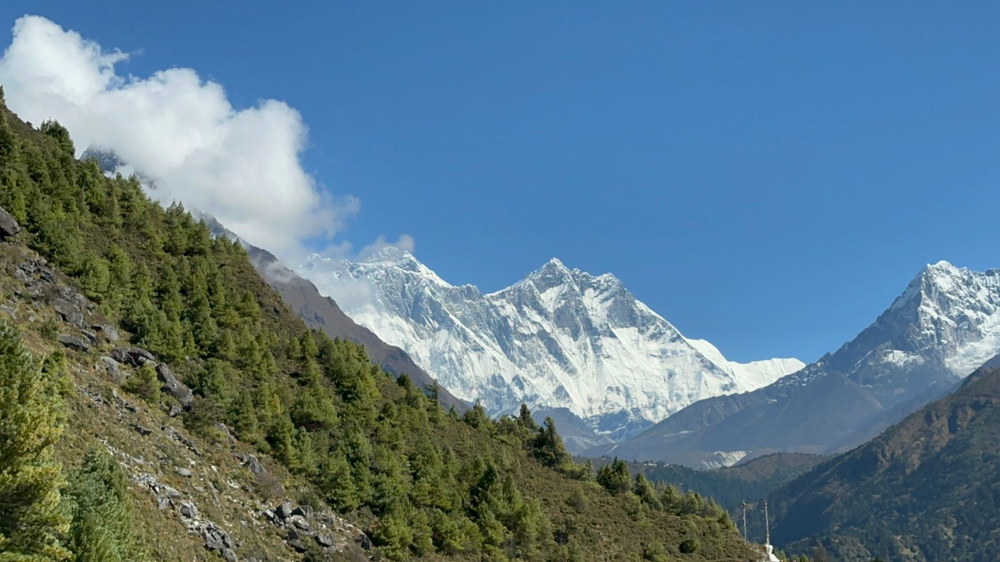
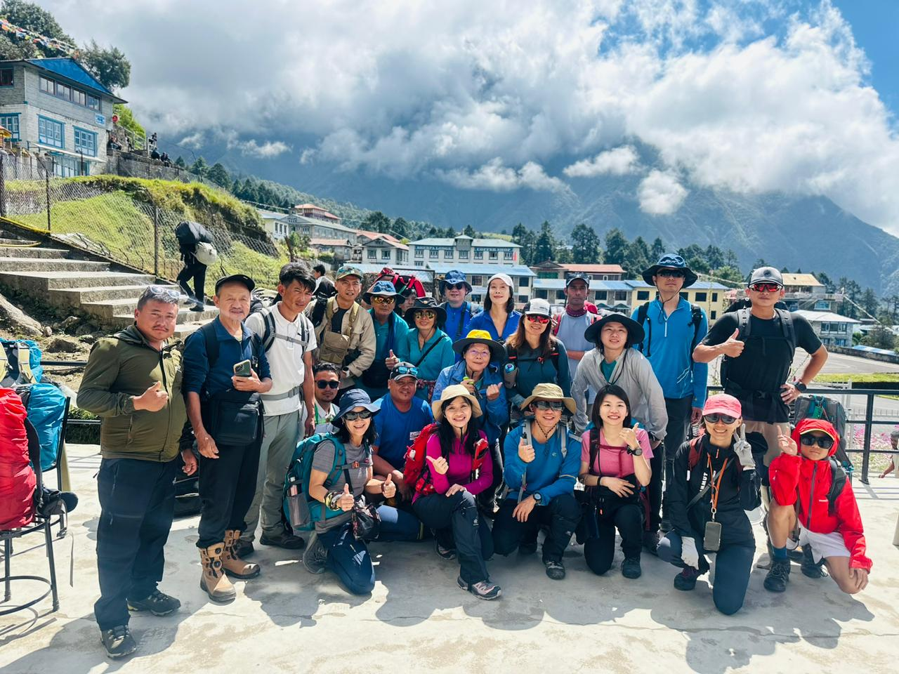
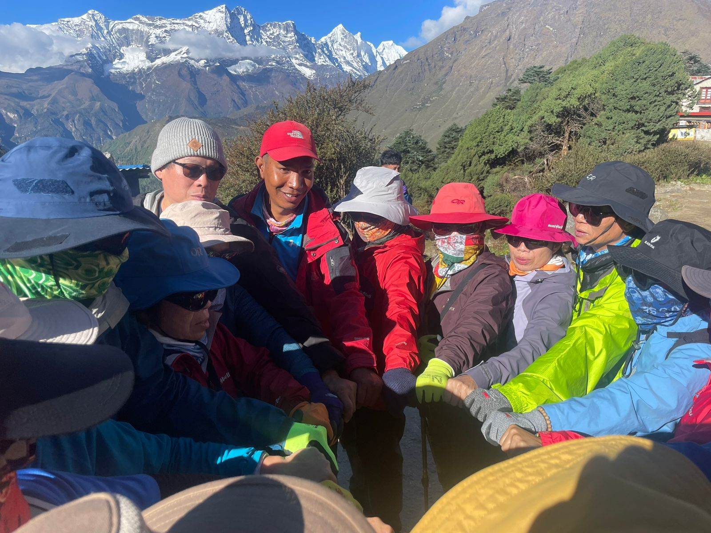
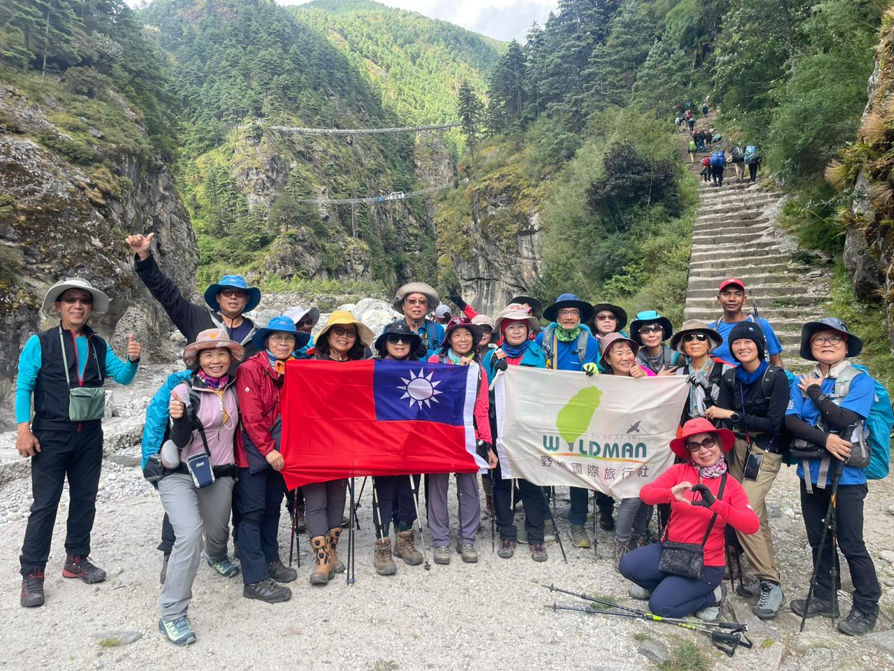
Day 2: Trek from Phakding to Namche Bazaar
Namche Bazaar – approximately 3,440 m / 11,286 ft
Trek: approximately 5–6 hours
Trek Distance: approximately 10.5 km / 6.5 miles
Accommodation: Mountain Teahouse Lodge
Activity: Sagarmatha National Park entry at Monjo & Hillary Bridge crossing
The second day involves a steady climb into the upper valley, crossing several suspension bridges along the Dudh Koshi River. The trail passes through small settlements, pine and rhododendron forests, and terraced slopes while offering views of surrounding peaks as the valley opens up.
After passing Monjo, you reach the official entrance checkpoint for Sagarmatha National Park, where permits are registered. From here, the route continues across the river and approaches the confluence below the famous Hillary Suspension Bridge, one of the most recognizable structures along the Everest trekking route.
Crossing the high bridge marks the start of the sustained uphill walk to Namche Bazaar. The path climbs steadily through pine forest, requiring a comfortable and even pace. On clear days, a gap in the trees along the trail offers the first distant glimpse of Mount Everest, providing an encouraging milestone during the climb.
Continuing the ascent, the trail brings you into Namche Bazaar, the primary hub and trading center of the Khumbu region. Built into a curved natural amphitheater on the mountain slope, Namche offers lodges, bakeries, cafes, equipment shops, and vibrant Sherpa culture. You will check into your teahouse, rest, and spend the evening enjoying dinner in the comfortable dining hall.
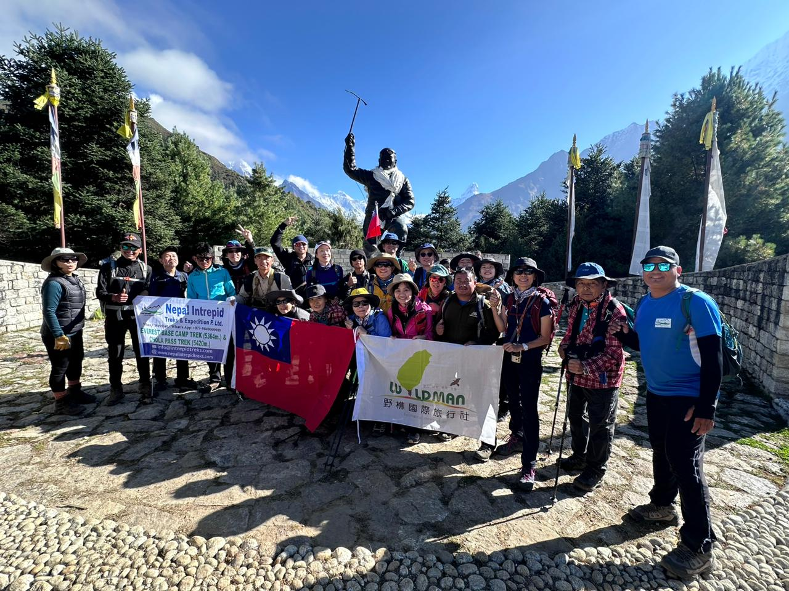
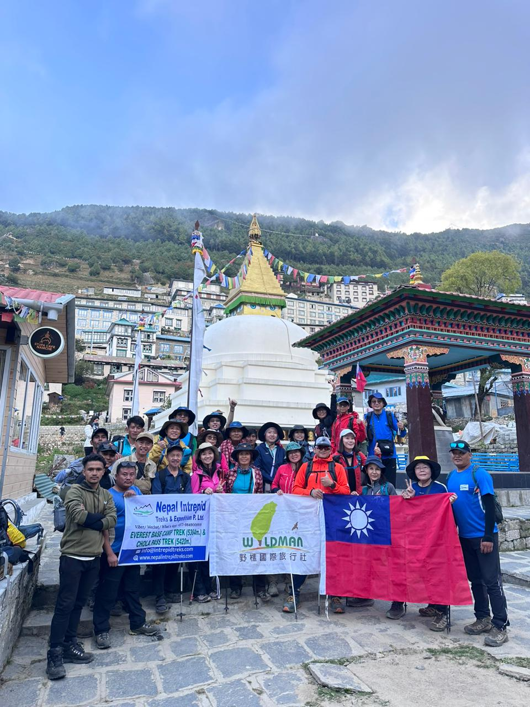
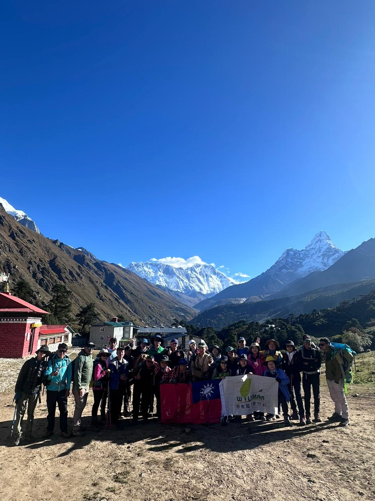
Day 3: Acclimatization and Exploration around Namche Bazaar
Namche Bazaar – approximately 3,440 m / 11,286 ft (Excursions up to 3,550 m / 11,647 ft)
Day hike: approximately 2–4 hours scenic exploration
Accommodation: Mountain Teahouse Lodge
Activity: Sagarmatha National Park Visitor Centre, Sherpa Museum & Namche Market
Acclimatization is essential for safe and comfortable high-altitude travel. Because Namche Bazaar sits at approximately 3,440 meters, this dedicated day allows your body to adjust to lower oxygen levels before undertaking higher excursions.
The day is designed as an active rest day: rather than resting entirely, you undertake short walks to higher points above the town before returning to Namche to sleep. This follows the proven high-altitude rule of 'climb high, sleep low'.
Options for the day include a morning walk up to the Sagarmatha National Park Visitor Centre, situated on a ridge above Namche. The viewpoint offers panoramic views of Ama Dablam, Thamserku, Kongde Ri, and Everest on clear mornings. The visitor centre also houses informative displays regarding Himalayan geography, flora, fauna, and Sherpa history.
You may also explore the streets, artisan shops, and bakeries of Namche Bazaar, or visit local cultural landmarks. In the afternoon, return to your lodge to rest, rehydrate, and discuss the plan for the upcoming excursion toward the Everest View Hotel.
Safety & Adaptation: Acclimatization in Namche Bazaar
A dedicated rest and adjustment day allows your body to adapt naturally to 3,440 m, supported by gentle scenic walks, hydration, and guidance from our certified Sherpa staff following the proven 'climb high, sleep low' rule.
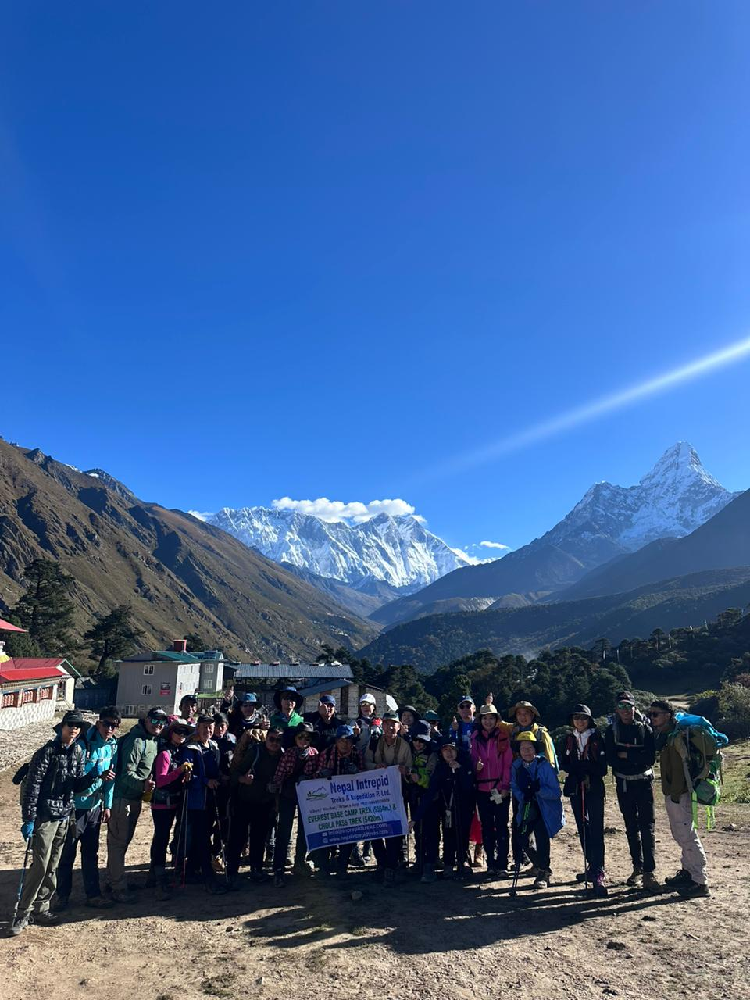
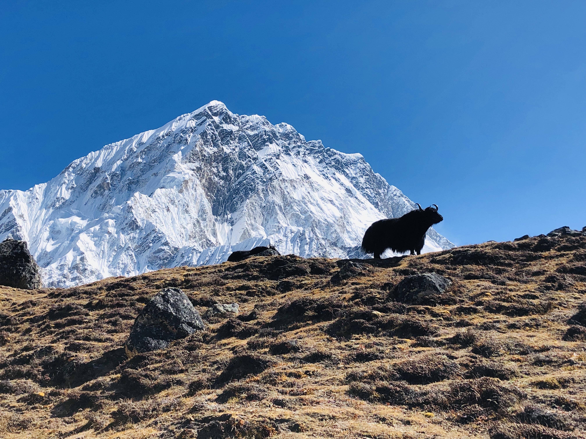
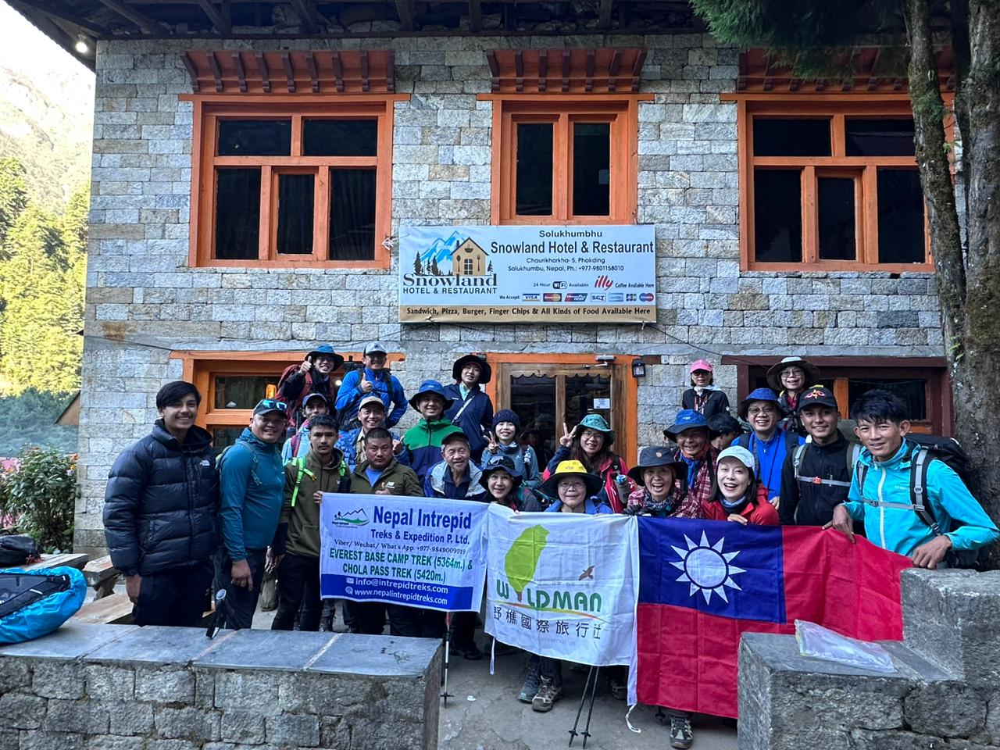
Day 4: Excursion to Hotel Everest View, Khumjung and Khunde (Return to Namche)
Hotel Everest View – approximately 3,880 m / 12,729 ft | Khumjung – 3,790 m / 12,434 ft
Day hike: approximately 5–7 hours return loop
Trek Distance: approximately 9.2 km / 5.7 miles circuit
Accommodation: Mountain Teahouse Lodge
Highlights: Panoramic terrace vistas of Everest, Lhotse, Ama Dablam; Hillary School & Khumjung Gompa
Today is the highlight of the trip, taking you to some of the finest panoramic viewpoints in the Everest region. The morning walk climbs past Syangboche airstrip to the world-renowned Hotel Everest View (3,880 m), one of the highest-placed luxury hotels in the world.
From the hotel's terrace, on a clear morning, you can enjoy unobstructed views of Mount Everest, Lhotse, Nuptse, Ama Dablam, and Thamserku while enjoying tea or coffee. The perspective on Ama Dablam from this ridge is widely considered one of the finest mountain panoramas in the Himalayas.
From the hotel, the excursion continues toward Khumjung (3,790 m), the largest traditional Sherpa settlement in the Khumbu. The village is known for its green-roofed houses, dry-stone agricultural walls, and the historic Khumjung Monastery, which preserves a revered relic associated with the legendary yeti. You will also see the Khumjung Hillary School, established by Sir Edmund Hillary in 1961.
A short walk leads to neighboring Khunde, home to the local hospital founded by the Himalayan Trust. After exploring these traditional villages and experiencing daily Sherpa life, the trail loops back down toward Namche Bazaar. Returning to Namche in the late afternoon, you spend your third and final evening in town.
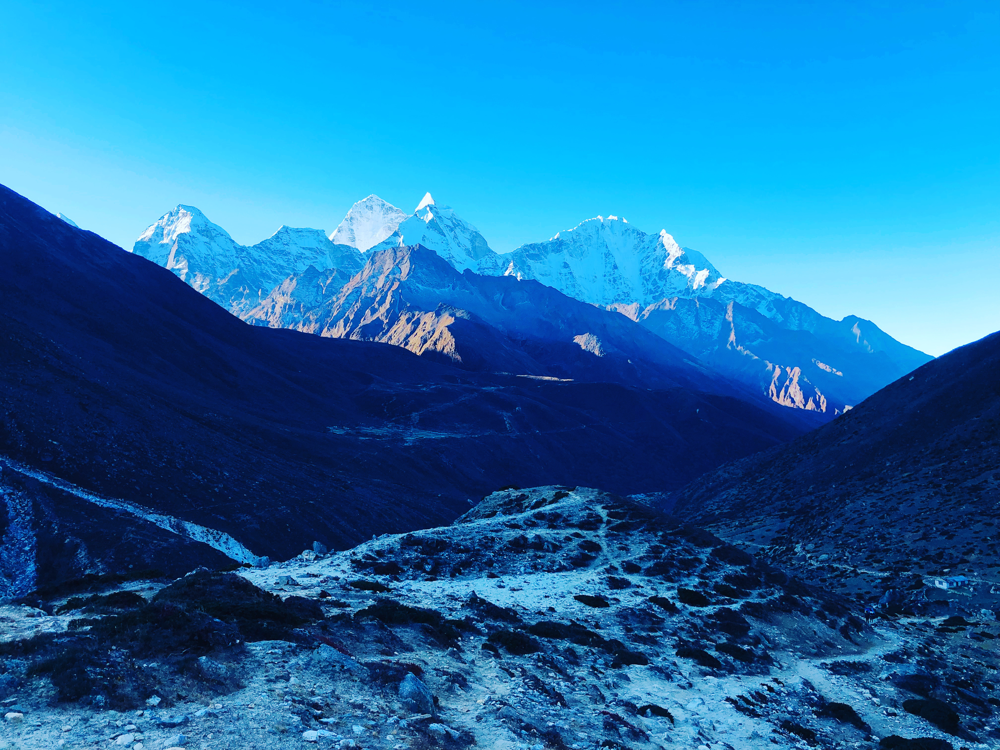
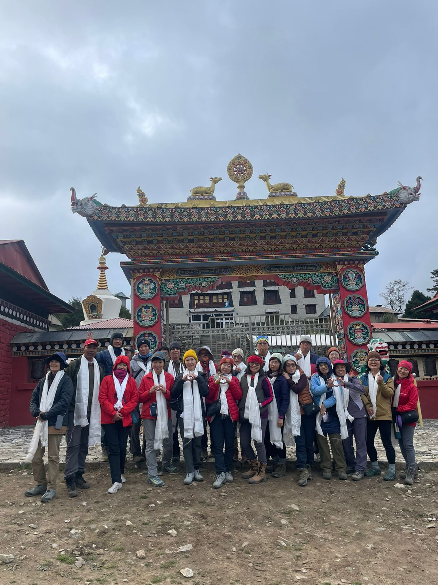
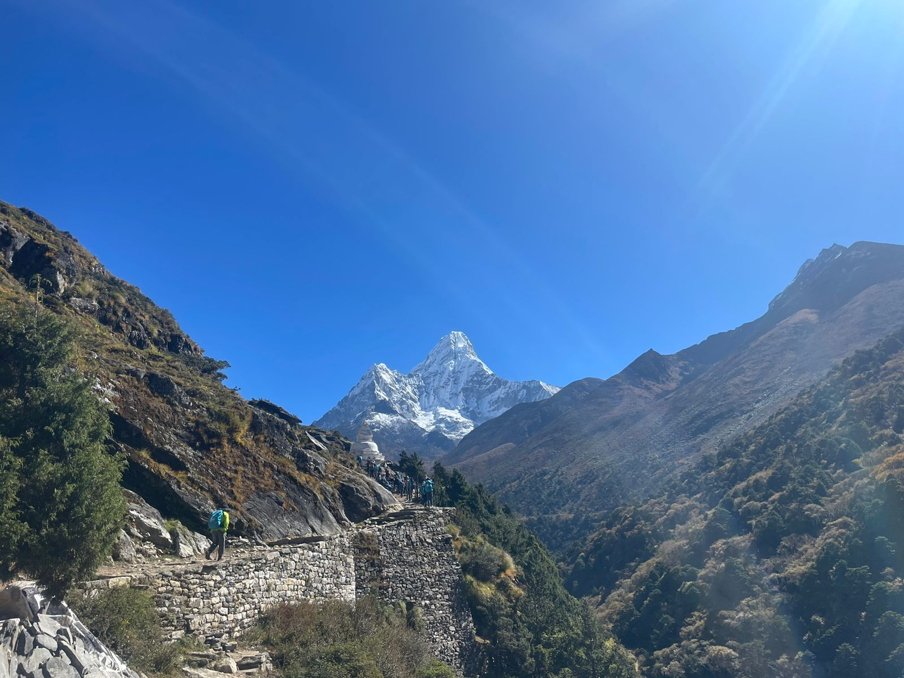
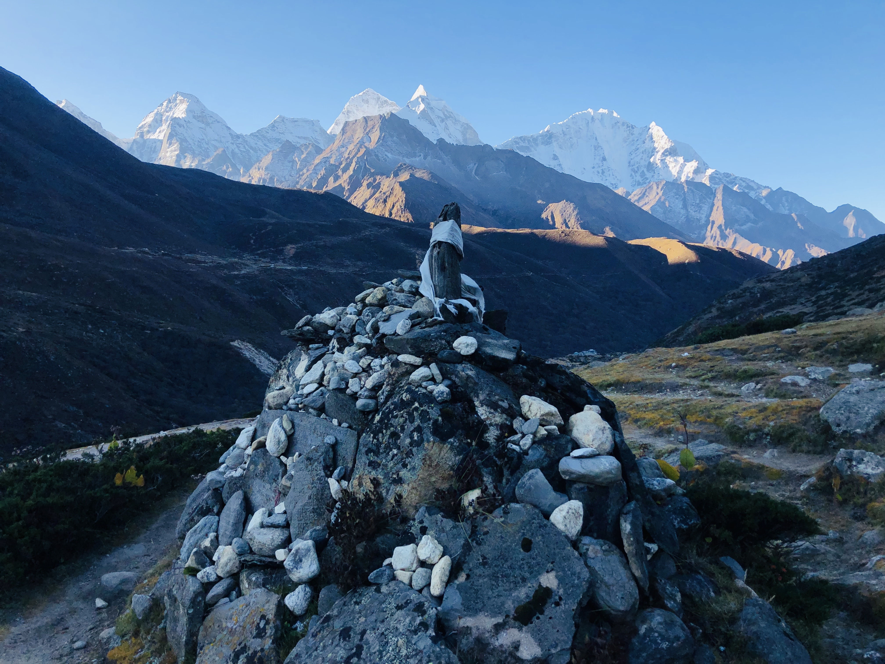
Day 5: Trek from Namche Bazaar to Phakding
Descend from 3,440 m / 11,286 ft to 2,610 m / 8,563 ft
Trek: approximately 4–5 hours
Trek Distance: approximately 10.5 km / 6.5 miles
Accommodation: Mountain Teahouse Lodge
Terrain: Sustained descent through pine forest, re-crossing Dudh Koshi suspension bridges
After breakfast in Namche Bazaar, you begin your return trek. The route retraces your steps down the steep trail toward the Dudh Koshi River, offering a different perspective on the landscape you climbed several days earlier.
Descending requires careful footing on the rocky, stepped terrain, but lower elevations bring noticeably richer oxygen levels and easier breathing. You will cross back over the Hillary Suspension Bridge and pass through the national park exit post at Monjo.
The trail follows the gentle contours of the Dudh Koshi valley back to Phakding. Along the way, you pass through pine forests, cross familiar suspension bridges, and encounter mani walls and prayer flags decorating the path.
Arriving in Phakding in the afternoon, you check into your teahouse for your penultimate night on the trail. The lower altitude makes for a comfortable and restful evening as the physical demands of the trek begin to ease.
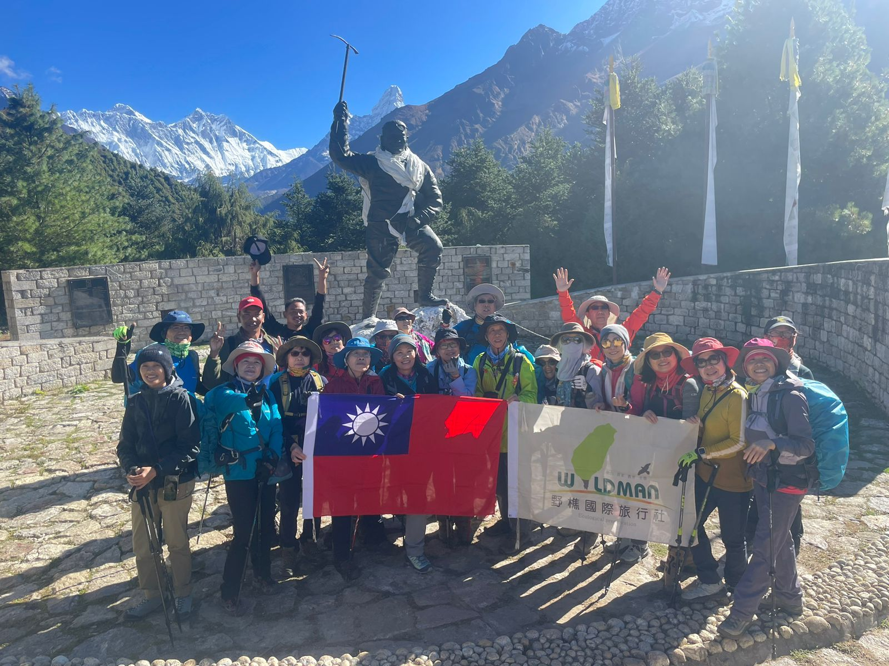
Day 6: Trek from Phakding to Lukla
Lukla – approximately 2,860 m / 9,383 ft
Trek: approximately 3–4 hours
Trek Distance: approximately 7.8 km / 4.8 miles
Accommodation: Mountain Lodge in Lukla
Celebration: Farewell celebration dinner with Sherpa guide and porter team
The final walking day of the trek leads from Phakding back up to Lukla. The trail winds along the river valley through small settlements including Ghat and Cheplung before the gradual final climb into Lukla.
Although the distance is modest, the gradual uphill climb toward Lukla provides a satisfying conclusion to the walking portion of the journey. You will pass chortens, mani stones, and small farms as you approach the settlement.
Reaching Lukla by early afternoon, you check into your mountain lodge and confirm arrangements for the following morning's flight. The afternoon is free to relax, explore Lukla's cafes, and reflect on the week's trekking experiences.
In the evening, enjoy a celebratory farewell dinner with your guide and porter team, celebrating the successful completion of your journey through the Everest region.
Day 7: Scenic Flight from Lukla to Kathmandu (or Ramechhap)
Kathmandu – approximately 1,300 m / 4,265 ft
Flight: approximately 25–35 minutes (+ road transfer if operating via Ramechhap)
Transfer: Private airport pickup and transfer to your Kathmandu hotel
Accommodation: Hotel in Kathmandu (Arranged per package)
Activity: Leisure afternoon in Thamel, souvenir shopping & trip debrief
Your trek concludes with an early morning flight from Lukla back to Kathmandu (or to Ramechhap with road transfer, depending on seasonal flight operations). Take off from the famous sloping runway of Tenzing-Hillary Airport for one final aerial perspective on the Himalayan range.
Lukla flights operate in the early morning when mountain weather is calmest. The short flight offers panoramic views of the high peaks before descending into the Kathmandu Valley or Manthali.
Upon arrival in Kathmandu, our representative transfers you to your hotel. The remainder of the day is at your leisure for resting, shopping in Thamel, or sightseeing at Kathmandu's UNESCO World Heritage sites.
Please note: Mountain flights in Nepal are subject to weather conditions. We strongly recommend scheduling at least one or two buffer days in Kathmandu before your international departure to accommodate any potential flight adjustments.
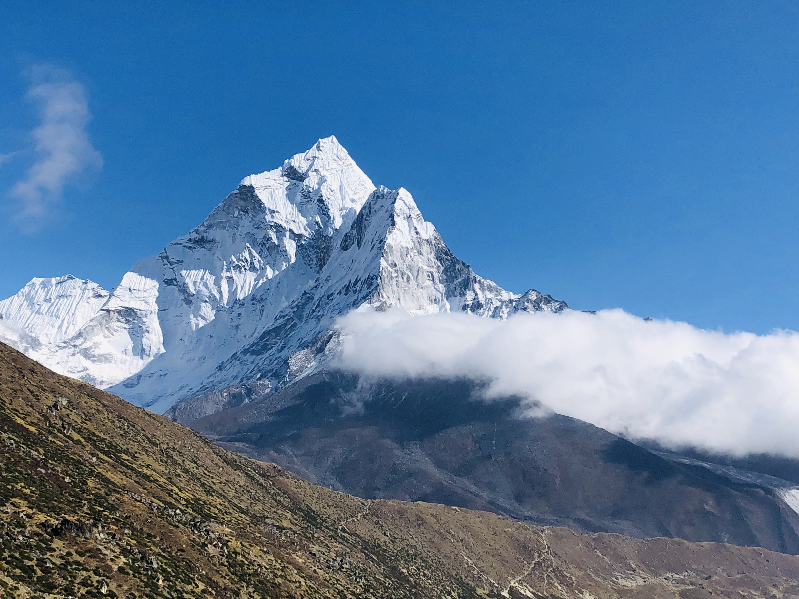
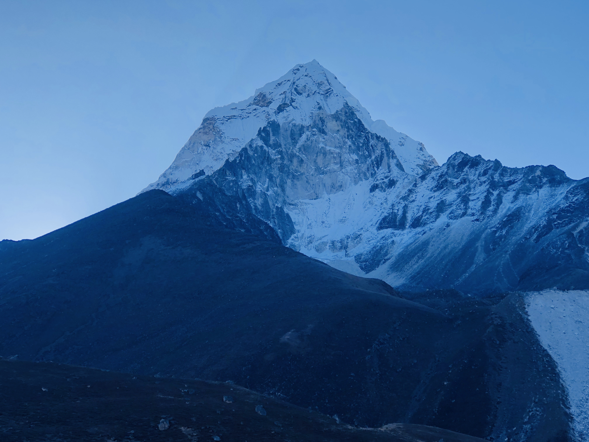
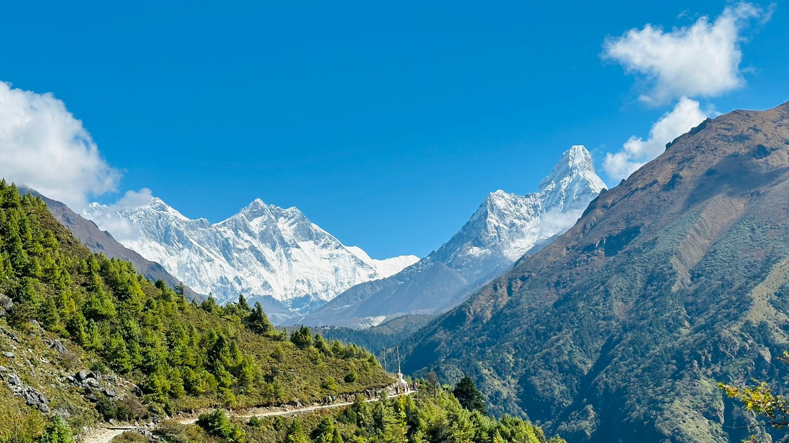
Not satisfied with this Itinerary?
Are you interested on planning custom trip? It only takes 2 minutes.
What includes in this Everest View Trek?
Our 7-day all-inclusive package covers all essential mountain permits, scheduled flights to/from Lukla, licensed Sherpa guide and porter services, teahouse accommodation, and all three meals on the trail.
Domestic Flights to/from Lukla
Round-trip scheduled mountain flights (Kathmandu/Ramechhap to Lukla and Lukla to Kathmandu) including all airport passenger taxes.
15 kg Flight Baggage Allowance
Full 15 kg baggage allowance per passenger on Lukla flights (10 kg check-in duffle + 5 kg hand-carry daypack).
All National Park & Local Permits
Sagarmatha National Park entry permit and Khumbu Pasang Lhamu Rural Municipality entry permit with pre-arranged paperwork.
6 Nights Mountain Teahouse Accommodation
Authentic mountain lodges (twin-sharing rooms) with cozy dining rooms: Phakding (2 nights) and Namche Bazaar (3 nights), Lukla (1 night).
Licensed English-Speaking Sherpa Guide
Government-certified, wilderness first-aid-trained local Sherpa guide managing trail safety, lodge check-ins, and cultural briefings.
Dedicated Porter Support
1 porter for every 2 trekkers (carrying up to 20–25 kg total, max 12.5 kg per trekker), allowing you to walk with a light daypack.
Staff Insurance & Fair Wages
Full insurance coverage, fair wages, meals, lodging, and high-altitude equipment for our guide and porter support team.
All Meals on Trek (Breakfast, Lunch, Dinner)
Three hearty meals daily selected from lodge menus, accompanied by hot tea or coffee with each meal and fresh fruit after dinner.
Medical Kit & Oximeter Monitoring
Comprehensive first-aid kit and twice-daily digital pulse oximeter blood oxygen saturation (SpO2) and heart rate monitoring.
Airport Transfers & Duffle Bag
Private airport pickup and drop-off in Kathmandu, plus a complimentary Namaste Hiking Trek branded 80L waterproof trekking duffle bag.
What Excludes in this Everest View Trek?
To help you budget accurately for personal expenses along the trail, the following items and services are not included in the standard package price.
International Airfare & Visa
Flights to/from Nepal and Nepal tourist entry visa fees (USD 30 for 15 days, obtainable on arrival at Kathmandu Airport).
Mandatory Travel Insurance
Comprehensive medical and travel insurance policy explicitly covering high-altitude trekking up to 4,000 m and emergency helicopter rescue.
Kathmandu Hotel & Meals Outside Trek
Hotel nights in Kathmandu before Day 1 and after Day 7, along with lunches and dinners in the capital (available upon request).
Personal Trekking Equipment
Personal hiking clothing, boots, and daypack. 4-season sleeping bags and down jackets are available for rent at our Kathmandu office.
Hot Showers in Mountain Teahouses
Gas-heated hot showers at teahouses (typically cost NPR 400 to NPR 600 / approx. USD 3–$5 per shower, paid directly to lodge).
Wi-Fi & Device Battery Charging
Airjaldi/Everest Link Wi-Fi cards and device charging fees in mountain lodges (approx. USD 2–$4 per charge, paid directly).
Boiled Drinking Water & Beverages
Mineral bottled water, boiled drinking water, soft drinks, espresso, and alcoholic beverages. We advise water purification tablets.
Tipping for Guides & Porters
Tips and gratuities for your trekking guide and porters (customary in Nepal, recommended USD 10–$15/day for guide, $8–$12/day for porter).
Flight Delays & Emergency Contingencies
Extra accommodation, meals, or chartered helicopter transportation resulting from weather-related Lukla flight disruptions.
Personal Expenses & Souvenirs
Souvenir shopping, laundry service in Namche Bazaar, trekking snacks, and incidental personal purchases.
Booking Dates & Availability for Everest View Trek
12
MAR
Mar 12 – Mar 18, 2026
AVAILABLE
$899 pp
26
MAR
Mar 26 – Apr 1, 2026
AVAILABLE
$899 pp
Packing List for Everest View Trek
Essential Info: Don't have it? Rent it with us — USD 1/day per item
Printable PDF
Check off items as you pack them. Your packing state is saved automatically in your browser!
Hiking Gear (10 items)
Trekking Poles
Trail stabilizers for Namche's steep steps • 1 pair
Daypack (30–35L)
Ergonomic pack with supportive hip belt • 1
Reusable Water Bottles
Nalgene wide-mouth (handles boiling water) • 2
Trekking Boots
Broken-in waterproof ankle-support boots • 1 pair
LED Headlamp
Early morning viewpoint hikes to Hotel Everest View • 1
Dry Bags / Stuff Sacks
Keep clothes organized & moisture-proof • 2
Rain Cover for Backpack
Waterproof shield against mountain showers • 1
Polarized Sunglasses (UV400)
Protect eyes from thin-air high-altitude glare • 1 pair
Sun Hat / Wide-Brim Cap
Shield face & neck on exposed valley trails • 1
Packing Organizers / Cubes
Compartmentalize duffle bag like a pro • 1 set
Garments & Layering (18 items)
Thermal Base Layer Tops
Moisture-wicking merino wool or synthetic • 2
Thermal Base Layer Bottoms
Warm tights for cold Namche mornings • 2
Fleece / Mid-Layer Jacket
Lightweight warmth for forest trails • 1
Quick-Dry Hiking Shirts
Breathable short & long-sleeve shirts • 3
Trekking Pants (Stretch)
Durable, quick-drying hiking trousers • 2 pairs
Waterproof Shell Jacket
Breathable wind & rain barrier • 1
Waterproof Shell Pants
Windproof protection for high ridge walks • 1 pair
Down Jacket (700+ Fill)
Warm puffy jacket for chilly nights • 1
Cosy Teahouse Outfit
Clean joggers & hoodie for dining halls • 1 set
Merino Wool Trekking Socks
Cushioned, anti-blister trail socks • 4 pairs
Thin Liner Socks
Reduces friction inside boots • 2 pairs
Lightweight Glove Liners
For cool morning trail starts • 1 pair
Windproof Insulated Gloves
Keep fingers warm above 3,500m • 1 pair
Warm Fleece Beanie / Hat
Traps body heat during chilly evenings • 1
Neck Gaiter / Buff
Shields throat from dry Khumbu dust • 2
Breathable Underwear
Quick-drying athletic underwear • 4
Sports Bras
Supportive, breathable for long walks • 2
Lodge Camp Shoes / Sandals
Slip into post-hike bliss at the teahouse • 1 pair
Sleeping System (5 items)
4-Season Sleeping Bag
-10°C rated for unheated teahouse nights • 1
Sleeping Bag Liner (Silk/Fleece)
Adds 3–5°C warmth and hygiene • 1
Earplugs
Block teahouse noise for peaceful sleep • 2 sets
Inflatable Travel Pillow
Compact neck support for deeper rest • 1
Sleep Eye Mask
Block sunrise light till you're ready • 1
Toiletries & Hygiene (14 items)
Microfiber Quick-Dry Towel
Packs light and dries fast • 1
Toothbrush & Toothpaste
Essential trail oral hygiene • 1 set
Biodegradable Wet Wipes
For refreshing "Khumbu showers" • 2 packs
Personal First Aid Kit
Painkillers, antiseptic & personal meds • 1
Sunscreen (SPF 50+)
High-altitude UV rays burn fast • 1
Blister Treatment Kit
Moleskin, Compeed patches & tape • 1
Moisturizing Lip Balm (SPF 30+)
Defend lips against mountain winds • 1
Hair Comb / Brush
Compact grooming on the go • 1
Period Supplies
Personal feminine hygiene supplies • As needed
Nail Clippers & Tweezers
Prevent bruised toenails on descents • 1
Toilet Paper & Zip-Lock Bags
Always carry your own supply • 2 rolls
Hand Sanitizing Gel
Keep hands clean before all meals • 2 bottles
Eco-Friendly Soap
Biodegradable wash for body & hands • 1
Water Purification Tablets
Chlorine dioxide drops or tablets • 1 pack
Electronics & Power (8 items)
Camera / Smartphone
Snap Everest, Ama Dablam & Sherpa life • 1
High-Capacity Power Bank
10,000–20,000 mAh (cold drains juice) • 1
Charging Cables & Batteries
Keep spare batteries in inner pockets • 1 set
Universal Travel Adapter
Type C & D 2-pin/3-pin round sockets • 1
GPS / Sports Watch
Track elevation gain & daily steps • 1
Earphones / Headphones
For flights & relaxing afternoons • 1
E-Reader / Book
Relaxed reading by teahouse stoves • 1
Waterproof Tech Pouch
Protect electronics from moisture • 1
Documents, Money & Miscellaneous (9 items)
Passport & Photocopies
Valid 6+ months with 2 paper copies • 1
Passport Photos (PP Size)
For regional permits & local SIM card • 4 photos
Travel Insurance Certificate
Must cover 4,000m trek & helicopter evacuation • 1 copy
Cash in Nepalese Rupees (NPR)
NPR 20,000–25,000 for drinks, hot showers & tips • As needed
Insulated Thermal Flask
Hot ginger tea on chilly morning climbs • 1
Trail Snacks / Energy Bars
Protein bars, nuts, chocolate & dry fruits • Varies
Electrolyte Tablets / Salts
Prevent altitude dehydration fatigue • 1 tube
Pocket Knife / Multitool
Handy utility tool (pack in checked bag) • 1
Journal & Pen
Record memories & trail reflections • 1 set
This packing list is a guide, not a rulebook. On the meeting day in Kathmandu we go through your gear together — anything missing you can rent from us for USD 1 a day per item, or we’ll point you to the right shop for your budget. Almost everything is available in Kathmandu, so first-time trekkers arrive light and leave prepared.
Read before you book, Everest View Trek
To help you decide if the Everest View Trek is for you, we have provided comprehensive operational information on flight details, teahouse accommodation, altitude safety, permits, costs, and the best time to visit.
If you are still unsure if this trek is for you, then email or WhatsApp us. We will get back to you within 24 hours to answer any more questions.
0/21 read
Nice start — keep going
Accommodation for the Everest View Trek
Accommodation along the Everest View Trek route transitions from a quality tourist-standard hotel in Kathmandu to authentic, locally operated mountain teahouses in the Khumbu Valley. Because the Everest View Trek remains in the lower and middle Khumbu (Lukla, Phakding, and Namche Bazaar), trekkers enjoy some of the highest-standard teahouses and lodge amenities available anywhere in the Himalayas.
What to Expect in Kathmandu for Accommodation?
Your pre-trek and post-trek accommodation in Kathmandu is typically arranged in a comfortable 3-star tourist hotel in the vibrant Thamel district. Located within easy walking distance of international restaurants, gear shops, banks, and bakeries, your hotel provides an ideal resting base before flying into the mountains. Standard Kathmandu hotel amenities include:
- Private en-suite bathroom with 24-hour hot water shower
- High-speed complimentary Wi-Fi and multiple electrical charging outlets
- Comfortable western spring mattress with clean linens and duvet
- Daily buffet breakfast with Nepali and continental choices
- Complimentary secure luggage storage for your city clothes and suitcases while trekking
What Is a Khumbu Teahouse on the Everest View Route?
A teahouse is a family-run mountain lodge providing private sleeping rooms, home-cooked meals, and a communal dining hall. In the lower Khumbu, teahouses have evolved into sturdy multi-story stone and timber lodges offering comfortable hospitality, solar lighting, and hearty dining.
Why Everest View Trek Has the Best Lodges in the Region
Unlike expeditions heading to higher elevations such as Lobuche (4,940 m) or Gorak Shep (5,164 m) where resources are extremely constrained, the Everest View Trek operates entirely between 2,610 m and 3,880 m. Settlements like Namche Bazaar and Phakding enjoy lower logistical barriers, resulting in:
- More spacious bedrooms with solid wooden beds and proper foam mattresses
- Wider availability of rooms with attached private flush toilets
- Reliable local hydroelectricity powering dining areas and bedroom lighting
- Extensive food menus featuring fresh bakery items, espresso, and diverse dishes
Room Configurations & Private Rooms
Standard teahouse rooms are twin-sharing, featuring two single beds with clean sheets, pillows, and heavy blankets. Solo travelers who prefer a private single room can easily request one in advance, especially during the spring and autumn seasons when early reservations secure dedicated single occupancy in Phakding and Namche Bazaar.
Bathroom Facilities & Hot Showers
In Phakding and Namche Bazaar, lodges feature both western-style sit-down flush toilets and clean squat toilets. Attached en-suite bathrooms are widely available in Namche Bazaar lodges. Gas-heated hot showers are available at all lodges along the route for a modest fee of NPR 400 to NPR 600 (USD 3 to USD 5). Showers are private and provide reliable hot water after a rewarding day on the trail.
Staying Warm at Night: Heating & Sleeping Bags
Teahouse dining rooms are heated every evening by a central stove burning wood or dried yak dung, creating a cozy social atmosphere. However, bedrooms are intentionally unheated to prevent fire hazards in timber structures. While lodges supply thick quilts, bringing a 4-season sleeping bag (rated to -10°C) or a thermal fleece sleeping bag liner guarantees warm, peaceful rest throughout the journey.
Available Food & Dining on the Everest View Trek
Dining in the Everest region is a memorable highlight of the trekking experience. Teahouses along the Lukla–Namche corridor maintain extensive multi-page menus that combine wholesome traditional Nepali fare with popular international mountain dishes, prepared fresh to order by experienced lodge cooks.
Meal Inclusions with Namaste Hiking Trek
All standard packages include three substantial, freshly cooked meals every trekking day: hearty breakfasts, energetic trail lunches, and warming dinners. In addition, morning and evening hot drinks (black tea, milk tea, ginger lemon tea, or coffee) are provided with your meals.
Traditional Nepali Dal Bhat: 24-Hour Mountain Fuel
The undisputed staple of Himalayan trekking is Nepali Dal Bhat Tarkari. This balanced, nutrient-dense platter consists of:
- Steamed white or brown rice (high-carbohydrate energy)
- Simmered lentil soup (protein-rich dal)
- Seasonal spiced vegetable curry (potatoes, cauliflower, cabbage, beans)
- Sautéed mountain spinach (saag) and homemade tangy tomato pickle (achar)
- Crisp lentil cracker (papad)
Best of all, Dal Bhat comes with complimentary unlimited refills of rice, dal, and curry, making it the most satisfying, stamina-building choice on the trail.
Western, Asian & Sherpa Specialties Available
If you crave variety, lodge kitchens offer an impressive selection of international favorites:
- Sherpa Cuisine: Traditional Shakpa (rich vegetable dumpling stew), Tsampa porridge, and Tibetan flatbread with local honey.
- Steamed & Fried Momos: Handcrafted Tibetan dumplings stuffed with seasoned vegetables, cheese, or potatoes.
- Noodles & Rice: Veg chow mein, fried rice, thukpa noodle soup, and spicy macaroni.
- Potatoes & Bakes: Sherpa potato pancakes, Swiss-style rosti with fried egg, cheese potato bakes, and freshly baked apple pie in Namche.
- Pizza & Pasta: Freshly baked wood-fired style pizzas topped with yak cheese and tomato spaghetti.
Breakfast Routine on the Trail
Breakfast is ordered the night before to ensure prompt preparation before the morning departure. Options include warm oatmeal porridge with apples and honey, muesli with warm milk, pancakes, French toast, Tibetan bread, and eggs prepared to your liking (boiled, fried, poached, or scrambled).
Meat Safety Advisory in Sacred Sagarmatha
Sagarmatha National Park is a sacred Buddhist sanctuary where animal slaughter is strictly prohibited by religious law. Consequently, all meat products (chicken, buff, pork) are slaughtered in low-altitude valleys and transported on foot or by pack animals to Namche Bazaar over several days without refrigeration. To avoid gastrointestinal illness, we strongly advise eating strictly vegetarian meals while trekking in the Khumbu.
Safe Drinking Water & Environmental Protection
Staying thoroughly hydrated (3 to 4 liters daily) is critical for acclimatization and vitality. To eliminate single-use plastic waste in Sagarmatha National Park, teahouses provide boiled drinking water for a small charge (NPR 150–300 per liter). We advise carrying two 1-liter reusable wide-mouth Nalgene bottles, complemented by water purification tablets (Aquatabs or chlorine dioxide) or a portable UV purifier.
Best Time to Trek: Seasonal Weather Breakdown
The Everest View Trek can be undertaken comfortably across nine months of the year due to its moderate maximum altitude of 3,880 meters. However, the two definitive peak seasons are Spring (March to May) and Autumn (September to November), each offering distinct mountain aesthetics and optimal trekking conditions.
Spring Season (March to May): Wildflowers & Vibrant Atmosphere
Spring brings gradually warming temperatures, longer daylight hours, and blooming rhododendron, magnolia, and pine forests along the Dudh Koshi Valley. Daytime temperatures in Namche Bazaar average between 10°C and 16°C, creating ideal walking conditions. Spring is also the bustling Everest climbing expedition season, giving Namche Bazaar an exciting international mountaineering buzz.
Autumn Season (September to November): Crystal-Clear Panoramas
Autumn is widely considered the finest season for mountain photography and unobstructed panoramic views. Following the summer monsoon, atmospheric dust and haze are completely washed away, leaving deep cobalt skies and razor-sharp views of Mount Everest, Ama Dablam, and Thamserku. Daytime temperatures range from 8°C to 15°C, while nights drop to around 0°C to -4°C in Namche.
Winter Trekking (December to February): Crisp Panoramas & Tranquil Trails
While high passes and Everest Base Camp become bitterly cold in winter, the 7-day Everest View Trek remains completely feasible and delightful. Days are sunny, dry, and exceptionally clear, with temperatures between 5°C and 10°C during walking hours. Nighttime temperatures drop to -8°C to -10°C in Namche. Trails and teahouses are peaceful, free from crowds, offering an intimate Himalayan experience.
Monsoon Season (June to August): Lush Greenery & Flight Realities
The summer monsoon brings daily rainfall, heavy valley cloud cover, and frequent Lukla flight delays. While the lower valleys are lush and green with roaring rivers and waterfalls, mountain visibility is inconsistent, making this season less recommended for sightseers.
Monthly Climate & Weather Overview for Namche Bazaar (3,440 m)
| Season / Month | Day Temp (°C) | Night Temp (°C) | Mountain Visibility | Trail Conditions |
|---|---|---|---|---|
| March – April (Spring) | 10°C to 15°C | -2°C to 2°C | Excellent mornings | Dry trails, blooming rhododendrons |
| May (Late Spring) | 14°C to 18°C | 4°C to 7°C | Good, afternoon haze | Warm, green valleys, dry paths |
| June – August (Monsoon) | 16°C to 20°C | 8°C to 11°C | Intermittent / Clouds | Wet, muddy sections, lush flora |
| September – October (Peak Autumn) | 11°C to 16°C | -1°C to 4°C | Exceptional (10/10) | Crisp, stable, optimal footing |
| November (Late Autumn) | 7°C to 12°C | -5°C to -1°C | Crystal clear skies | Dry, colder mornings & evenings |
| December – February (Winter) | 4°C to 9°C | -9°C to -4°C | Spectacular, sunny days | Cold, peaceful, occasional snow dusting |
A Typical Day on the Everest View Trek
Trekking in the Himalayas follows a natural, invigorating rhythm tuned to mountain daylight and weather patterns. Clear mountain visibility is highest during early morning hours, so daily schedules are planned to maximize scenic viewpoints, ensure unhurried walking paces, and provide ample rest.
6:30 AM – Morning Wake-Up & Duffle Packing
Your trekking day begins with gentle morning light. You pack your main duffle bag with clothing and sleeping equipment before leaving it outside your room for our porters to transport. You then prepare your personal daypack with drinking water, warm layers, waterproof shell, camera, sunscreen, and lip balm.
7:00 AM – 7:45 AM – Hearty Lodge Breakfast
Enjoy a warm, cooked breakfast in the dining hall with freshly brewed tea or coffee. Your guide checks in with everyone, reviews health status, and summarizes the day's trail elevation profile, walking duration, and upcoming milestones.
8:00 AM – 11:30 AM – Scenic Morning Trek
You hit the trail when air is crisp and Himalayan vistas are at their sharpest. Walking is conducted at an even, controlled cadence ("bistari, bistari" in Nepali, meaning slowly and steadily). Regular 10-minute pauses allow you to photograph stupas, suspension bridges, prayer flags, and snow-capped peaks, hydrate, and adjust clothing layers.
11:30 AM – 1:00 PM – Midday Trailside Lunch
Around noon, the group stops at a scenic trailside lodge in settlements like Ghat, Monjo, or Syangboche. A warm lunch—such as hot Dal Bhat, vegetable noodles, or fried rice—is enjoyed on sunlit outdoor terraces overlooking the roaring Dudh Koshi River or alpine ridges.
1:00 PM – 3:30 PM – Afternoon Walking & Lodge Arrival
After lunch, the trek continues for another 2 to 3 hours to reach your overnight destination (Phakding or Namche Bazaar). Upon arrival, check into your room, unpack essentials, and enjoy a welcoming cup of hot lemon ginger tea in the dining hall.
3:30 PM – 6:00 PM – Village Exploration & Acclimatization Walks
Afternoons offer flexible personal time. In Namche Bazaar, you can explore traditional Sherpa bakeries, visit the Sagarmatha National Park Visitor Centre, browse local artisan jewelry and woolen markets, or enjoy an espresso at a local café while taking in views of Kongde Ri.
6:00 PM – 8:30 PM – Warm Dining Hall Dinner & Evening Briefing
As evening falls and mountain air cools, everyone gathers in the dining room heated by the central stove. A hot dinner is served, followed by card games, reading, sharing stories, and discussing photography. Your lead guide conducts evening oxygen saturation checks using a digital pulse oximeter and briefs the team on tomorrow's schedule.
9:00 PM – Lights Out & Restful Sleep
By 9:00 PM, lodges quiet down as trekkers retreat to their rooms for a deep, restorative night's sleep tucked inside warm sleeping bags.
Permits for Everest View Trek
Entering the protected Everest (Khumbu) region requires two official government permits designed to preserve Sagarmatha's fragile alpine ecosystem and fund local Sherpa community infrastructure. All permits are organized and covered under our full-service packages.
1. Sagarmatha National Park Entry Permit
Sagarmatha National Park was established in 1976 and designated a UNESCO World Heritage site in 1979. The permit is issued by Nepal's Department of National Parks and Wildlife Conservation. Fees are:
- Foreign Nationals: NPR 3,000 (~USD 25) per person
- SAARC Citizens: NPR 1,500 (~USD 12) per person
- Children under 10 years: Free of charge
This permit is officially verified and stamped at the park entrance checkpoint in Monjo on Day 2 of the trek.
2. Khumbu Pasang Lhamu Rural Municipality Permit
Introduced by the local autonomous municipality to directly benefit Khumbu trail maintenance, safety infrastructure, waste management, and local health posts, this permit costs NPR 3,000 (~USD 25) for foreign travelers. It is issued upon arrival at the Lukla municipal checkpoint.
Do You Need a TIMS Card for Everest?
No. While other trekking regions in Nepal (such as Annapurna or Langtang) require the Trekkers' Information Management System (TIMS) card, the Khumbu region replaced TIMS with the Khumbu Pasang Lhamu Rural Municipality Permit. You do not need to acquire a TIMS card for the Everest View Trek.
Hassle-Free Organization by Namaste Hiking Trek
All permit fees, government taxes, paperwork, and checkpoint registrations are 100% included in your trek package. Our team collects your passport details and passport photos during preparation, ensuring seamless, queue-free entry at every military and park checkpoint along the route.
Acclimatization Strategy for the Everest View Trek
Acclimatization is the natural physiological process through which your body adapts to the lower atmospheric pressure and decreased oxygen availability encountered at higher elevations. Proper acclimatization ensures comfort, stamina, and safety throughout your journey.
The Science of Altitude at Namche Bazaar (3,440 m)
At Namche Bazaar, atmospheric pressure drops to approximately 68% of sea level. This means that while each breath still contains 21% oxygen, the lower air pressure delivers fewer oxygen molecules into your bloodstream. Your body compensates by increasing respiration rate, elevating heart rate, and stimulating red blood cell production.
The "Climb High, Sleep Low" Golden Rule
Our itinerary strictly adheres to the internationally recognized high-altitude medical protocol of "climb high, sleep low." On Day 3 and Day 4, you undertake gentle, scenic day walks up to 3,550 m (Sagarmatha Visitor Ridge) and 3,880 m (Hotel Everest View), stimulate your body's adaptation mechanism, and then descend back to Namche Bazaar (3,440 m) to sleep. This significantly enhances deep sleep quality and prevents altitude symptoms.
Why 3 Nights in Namche Bazaar Is Our Signature Safety Advantage
Many hurried operators rush clients out of Namche after only one or two nights. Namaste Hiking Trek schedules three consecutive nights in Namche Bazaar (Days 2, 3, and 4). This generous pacing provides an unhurried, luxurious acclimatization buffer, allowing your body to stabilize fully before undertaking the panoramic ridge walk to Khumjung and Khunde.
Hydration, Nutrition & Guide Oximeter Checks
To support natural altitude adaptation, adhere to these simple, vital practices:
- Drink 3 to 4 liters of clean fluids daily (water, ginger tea, garlic soup)
- Maintain a high-carbohydrate diet with regular meals of Dal Bhat, porridge, and potatoes
- Strictly avoid alcohol, tobacco, and sedatives during the ascending phase
- Daily health monitoring: Our lead guides carry pulse oximeters to measure oxygen saturation (SpO2) and pulse rate every evening
Diamox (Acetazolamide) Advisory
Diamox is a widely used carbonic anhydrase inhibitor that speeds up natural acclimatization by slightly acidifying the blood and encouraging deeper breathing. While most healthy trekkers on the Everest View Trek do not require medication due to our gentle pacing, you may carry Diamox (125 mg to 250 mg twice daily) as a precaution after consulting with your travel doctor.
Difficulty and Physical Fitness Required for Everest View Trek
The 7-day Everest View Trek is graded as Moderate. Unlike the 14-day Everest Base Camp route or technical high passes (Cho La, Renjo La), this trek follows well-established stone trails and involves no glacier walking, technical climbing, or extreme altitudes (the maximum sleeping altitude is 3,440 m in Namche Bazaar).
Physical Demands & Daily Walking Profile
Trekkers walk an average of 4 to 6 hours per day at an unhurried pace. The trail features stone stairs, gradual riverside paths, suspension bridges, and sustained uphill ascents—most notably the 2.5-hour climb from the Hillary Bridge up through pine forests to Namche Bazaar (a continuous gain of approximately 600 vertical meters).
Who Can Successfully Complete This Trek?
This route is accessible to first-time Himalayan hikers, active seniors, couples, and families with children aged 8 and above who maintain average physical fitness and enjoy weekend walking, hiking, or regular cardio exercise.
Recommended 6-Week Pre-Trek Training Schedule
| Training Phase | Recommended Weekly Activities | Key Objective |
|---|---|---|
| Weeks 1 – 2 (Base Building) | Brisk walking 45 min, 3x weekly; stair climbing or gentle incline treadmill. | Conditioning calf muscles, ankles, and cardiovascular baseline. |
| Weeks 3 – 4 (Strength & Endurance) | Stair climbing with 4–5 kg backpack 30 min, 2x weekly; weekend outdoor hikes (8–10 km); squats and lunges. | Strengthening quadriceps, hamstrings, and core for uphill switchbacks and descents. |
| Weeks 5 – 6 (Peak & Taper) | One long weekend hike (12–15 km) wearing your actual trekking boots; light jogging and stretching. Taper activity 4 days before flight. | Breaking in footwear, verifying daypack comfort, arriving well-rested. |
Cultural Insights of the Khumbu: Sherpa Traditions & Heritage
The Khumbu region is the sacred ancestral homeland of the Sherpa people (literally "People of the East"), who migrated from the Kham region of eastern Tibet over five centuries ago. Their rich Tibetan Buddhist traditions, mountaineering lore, and spiritual reverence for the Himalayas infuse every step of the journey with profound cultural meaning.
Sacred Buddhist Monuments: Mani Stones, Chortens & Prayer Wheels
Along the trail between Lukla, Phakding, and Namche, you will encounter numerous sacred stone monuments:
- Mani Walls: Stone walls carved with the sacred mantra "Om Mani Padme Hum" (Hail to the Jewel in the Lotus). By Buddhist custom, always walk to the left of Mani walls and chortens (keeping the sacred monument on your right) in a clockwise direction.
- Chortens (Stupas): Dome-shaped Buddhist shrines symbolizing enlightenment, peace, and the protective energy of the valley.
- Prayer Wheels: Cylinders embossed with sacred mantras. Trekkers and locals spin them clockwise to spread blessings of compassion.
The Meaning of Five-Colored Tibetan Prayer Flags (Lungta)
Strings of vibrant prayer flags flutter from suspension bridges, high ridges, and rooftops. Known as Lungta (Wind Horse), each color represents a fundamental cosmic element:
- Blue: Sky and space
- White: Air and clouds
- Red: Fire and warmth
- Green: Water and nature
- Yellow: Earth and foundation
As the mountain wind blows through the fabric, the prayers and mantras are carried across the valleys to bring peace, prosperity, and protection to all living beings.
Historic Monasteries: Khumjung & Namche Gompas
On Day 4, you visit the historic monastery in Khumjung (3,790 m), which houses a revered skull relic attributed to the legendary yeti. In Namche Bazaar, the local gompa offers an inspiring atmosphere for observing morning prayer rituals and spinning century-old bronze prayer wheels.
Sherpa Village Life in Khumjung & Khunde
Unlike trekking hubs that cater purely to tourists, Khumjung and Khunde offer authentic glimpses into daily Sherpa life. Here you see neat stone-walled potato and buckwheat fields, dry-stone homes with green tin roofs, the famous Khumjung Hillary School founded by Sir Edmund Hillary in 1961, and the Khunde Hospital established by the Himalayan Trust.
Route Highlights & Alternatives: Everest View vs. Other Treks
The Everest View Trek is specially designed for travelers seeking iconic Himalayan panoramas, Sherpa cultural immersion, and peaceful mountain walking without the extended physical demands of the full 14-day Everest Base Camp expedition.
Key Advantages of the 7-Day Everest View Trek
- Short Time Commitment: Requires only 7 trip days, fitting easily into a one-week holiday or combined with a cultural tour of Kathmandu and Pokhara.
- Superior Vantage Point for Everest: The panoramic terrace of the world-famous Hotel Everest View (3,880 m) offers a sweeping, unobstructed vista of Mount Everest, Lhotse, Nuptse, and Ama Dablam that is actually wider and more photogenic than from Base Camp itself (where Everest's summit is obscured by the West Ridge and Nuptse).
- Maximum Sleeping Altitude of 3,440 m: Drastically reduces the risk of Acute Mountain Sickness (AMS) compared to sleeping at Gorak Shep (5,164 m).
- Premier Teahouse Standards: Enjoy the highest-comfort lodges, private bathrooms, and best bakeries in the region.
Everest Region Trek Comparison Table
| Trek Package | Duration | Max Elevation | Difficulty | Best Suited For |
|---|---|---|---|---|
| Everest View Trek | 7 Days | 3,880 m | Moderate | Beginners, families, seniors, time-limited travelers |
| Classic Everest Base Camp | 14 Days | 5,545 m (Kala Patthar) | Strenuous | Experienced hikers wanting the iconic Base Camp footprint |
| Gokyo Lakes & Cho La Pass | 16 Days | 5,368 m (Gokyo Ri) | Challenging | Adventurers wanting turquoise alpine lakes and glacier pass crossings |
Tell Me About the Flight to Lukla
The flight to Tenzing-Hillary Airport in Lukla (2,860 m) is widely renowned as one of the most exhilarating mountain aviation experiences in the world. Built by Sir Edmund Hillary and local Sherpas in 1964, the short airstrip carved into the mountainside serves as the historic gateway to the Khumbu Valley.
Aircraft Types & Flight Characteristics
Flights are operated by specialized STOL (Short Takeoff and Landing) twin-turboprop aircraft such as the De Havilland DHC-6 Twin Otter, Dornier 228, and LET L-410 Turbolet. These rugged aircraft seat between 14 and 18 passengers and are piloted by senior Himalayan captains with extensive alpine flight hours.
Kathmandu vs. Ramechhap (Manthali) Departures
During peak trekking seasons (April to May and October to November), the Civil Aviation Authority of Nepal (CAAN) directs all Lukla flight operations through Ramechhap Airport (Manthali) to reduce airspace congestion at Kathmandu's international airport. When this applies:
- Namaste Hiking Trek coordinates private vehicle transfer between your Kathmandu hotel and Ramechhap (approximately 4 to 5 hours driving on scenic highways).
- Flight duration from Ramechhap to Lukla is a brief 15 to 20 minutes.
- During off-peak months (March, September, winter), flights typically depart directly from Kathmandu domestic terminal (30 to 35 minutes flight time).
Weather Operations & Visual Flight Rules (VFR)
Mountain flights operate exclusively under Visual Flight Rules (VFR). If clouds, low visibility, or strong winds occur in the Khumbu, flights are held until conditions clear. Operations take place in the early morning (6:00 AM to 11:00 AM) when mountain weather is calmest.
The Vital Need for Buffer Contingency Days
Because Lukla flights are strictly weather-dependent, we strongly recommend booking your international return flight home with at least 1 to 2 buffer days in Kathmandu after Day 7. A built-in buffer prevents weather delays in the mountains from causing missed international flights.
Helicopter Alternatives
In cases of extended fixed-wing delays, commercial passenger helicopters (Airbus H125 / B3e) can often fly under lower cloud ceilings. Upgrades to shared or chartered helicopters can be coordinated on-site by our Lukla airport representatives.
Everest View Trek for Different Age Groups & Travelers
Because the Everest View Trek features moderate elevations, excellent teahouse infrastructure, and a gentle daily walking pace, it is the most versatile and inclusive route in the Everest region, appealing to diverse age demographics and traveler styles.
Family Trekking with Children & Teenagers
The Everest View Trek is the premier choice for families wanting to introduce children (aged 8 and older) to the Himalayas. The short daily walking distances (3 to 5 hours), safe trails, captivating suspension bridges, friendly pack animals, and rich Sherpa cultural stops keep kids thoroughly engaged without exhausting them.
Active Seniors & Older Hikers
For mature travelers and seniors in good general health, this trek offers the ideal balance of adventure and comfort. You experience world-class views of Mount Everest and stay in comfortable lodges with attached bathrooms in Namche Bazaar, without subjecting your cardiovascular system to extreme high-altitude stress (above 4,000 m).
Solo Trekkers (Male & Female)
Solo travelers are warmly welcomed on our scheduled group departures, providing companionship, shared laughs, and new international friends. Alternatively, solo travelers can book a private guided trek for 100% personalized pacing and tailored attention. The Khumbu is renowned for its welcoming Sherpa community, low crime rate, and respectful culture.
Couples & Honeymooners
For couples seeking an unforgettable romantic adventure, watching the golden sunrise over Mount Everest and Ama Dablam from the terrace of Hotel Everest View is an unmatched memory. We ensure private twin/double rooms throughout your stay.
Extend Your Trip After the Everest View Trek
Because the Everest View Trek takes only 7 days, many travelers choose to combine their mountain journey with other world-class cultural, wildlife, and adventure destinations across Nepal. Namaste Hiking Trek seamlessly coordinates all domestic extensions.
Popular Extension Destinations in Nepal
- Chitwan National Park Jungle Safari (3 Days / 2 Nights): Journey to the subtropical lowlands of Chitwan. Experience jeep safaris, spot endangered greater one-horned rhinos, wild elephants, Bengal tigers, and glide along the Rapti River in traditional dugout canoes to observe gharial crocodiles.
- Pokhara Nature & Lake City (3 Days / 2 Nights): Relax beside tranquil Phewa Lake beneath the dramatic backdrop of the Annapurna Range and Machhapuchhre (Fishtail). Enjoy boating, visit the World Peace Pagoda, explore waterfalls, and enjoy vibrant lakeside cafes.
- Kathmandu Valley UNESCO World Heritage Tour (1–2 Days): Explore Kathmandu's ancient cultural landmarks, including the sacred Hindu temple of Pashupatinath, the colossal Buddhist stupa of Boudhanath, the hilltop "Monkey Temple" of Swayambhunath, and the medieval palace squares of Patan and Bhaktapur.
- Trishuli River White Water Rafting (1 Day): Add an adrenaline rush on your way between Kathmandu and Pokhara with Class III/IV river rafting on the scenic Trishuli River.
Porter Weight Limit and Information for Everest View Trek
Porters are the indispensable backbone of Himalayan trekking. Namaste Hiking Trek is firmly committed to ethical porter treatment, fair remuneration, and safe load limits in strict compliance with the International Porter Protection Group (IPPG) guidelines.
Strict Baggage Allowance: 15 kg (33 lbs) Total per Trekker
Domestic airlines operating the Lukla route enforce a mandatory baggage limit of 15 kg (33 lbs) per passenger, comprising:
- 10 kg (22 lbs) for your main trekking duffle bag (carried by your porter)
- 5 kg (11 lbs) for your personal daypack (carried by yourself)
Our porters carry a maximum load of 20 to 22 kg, which is split equally between two trekkers (10 kg each in separate duffle bags). Excess baggage should be stored securely and free of charge at your hotel in Kathmandu.
What Stays in Your Duffle Bag vs. What Stays in Your Daypack
- In Your Duffle Bag (Porter): Sleeping bag, extra clothing layers, spare trekking pants, evening lodge wear, toiletries, extra footwear, and replacement batteries. You will not have access to your duffle during the day until you reach your evening lodge.
- In Your Daypack (Carried by You): Water bottles, waterproof rain jacket and pants, warm fleece layer, camera/phone, passport and permits, cash, sunglasses, sunscreen, lip balm, and personal medication.
Ethical Porter Care Standards
We ensure all our porters receive fair above-industry wages, comprehensive medical and evacuation insurance, warm mountain clothing, suitable trekking footwear, and proper accommodation and food in lodges on every departure.
Upgrade to Helicopters on the Everest View Trek
For travelers seeking extra comfort, breathtaking aerial perspectives, or flexibility in avoiding fixed-wing Lukla flights, helicopter upgrades provide an exhilarating alternative.
Scenic Helicopter Return from Namche Bazaar or Lukla
After completing your excursion to Hotel Everest View and Khumjung, you can choose to fly back directly from Namche Bazaar (Syangboche helipad) or Lukla to Kathmandu by private or shared helicopter:
- Bypass the return trek from Namche to Lukla, saving walking time
- Fly alongside towering Himalayan giants, enjoying aerial panoramas of Everest, Lhotse, Nuptse, and Ama Dablam
- Arrive directly at Kathmandu airport domestic helipad within 45 minutes
Shared vs. Private Chartered Flights
Helicopters accommodate up to 5 passengers (subject to high-altitude weight restrictions). We can arrange private charters for families and small groups, or coordinate shared seats on commercial flights operating in the valley. Contact our travel coordinators in Kathmandu to check current seasonal pricing and availability.
Responsible Trekking & Sustainability in Sagarmatha National Park
Sagarmatha National Park is a globally significant biodiversity hotspot and a fragile alpine sanctuary. Responsible trekking practices ensure that our journeys respect local Sherpa culture, protect natural habitats, and leave positive economic footprints.
Leave No Trace Principles
- Pack It In, Pack It Out: Never discard non-biodegradable waste (plastic wrappers, wet wipes, batteries) on the trail. Carry all personal trash to teahouse disposal points or back to Kathmandu.
- Eliminate Single-Use Plastic: Use reusable water bottles and water purification methods rather than buying commercially bottled water.
- Stay on Established Trails: Walking off-trail causes soil erosion and damages delicate alpine shrubs.
- Preserve Cultural Sites: Never touch, carve, or remove stones from Mani walls or chortens. Always pass sacred sites on the left (clockwise).
Sagarmatha Pollution Control Committee (SPCC)
The SPCC is a local non-profit community organization founded by Sherpa elders in 1991 to manage waste along the Everest trail. A portion of your municipality permit fee supports their community waste collection and recycling programs across Namche Bazaar.
Supporting Local Sherpa Economies
We believe in sustainable tourism that directly benefits host communities. By employing local Sherpa guides, hiring local porters, dining in family-run lodges, and shopping at village bakeries and markets, your journey supports sustainable mountain livelihoods.
Booking a Trek: Independent vs. Guided Trek for Everest View
While independent trekking was historically permitted in parts of Nepal, government regulations and safety standards now strongly emphasize professional, guided arrangements for all high-altitude routes.
Nepal Government Mandatory Guide Regulation (2023)
In April 2023, the Nepal Tourism Board (NTB) enacted regulations requiring foreign trekkers in national parks and conservation areas to be accompanied by a government-licensed trekking guide. This policy was instituted to enhance trekker safety, reduce missing hiker incidents, and protect alpine environments.
The Invaluable Benefits of a Licensed Sherpa Guide
- Safety & Altitude Health: Our certified guides undergo rigorous Wilderness First Aid training and monitor your oxygen levels daily with digital pulse oximeters.
- Cultural Storytelling: A local guide introduces you to Sherpa folklore, Tibetan Buddhist traditions, village history, and hidden viewpoints you would otherwise miss.
- Guaranteed Lodge Reservations: During busy spring and autumn months, lodges in Namche Bazaar book out completely. Having an agency secures prime rooms with attached bathrooms.
- Flight Management & Weather Reconfirmations: Your guide liaises directly with airlines at Lukla, managing boarding passes and smoothing flight adjustments during weather disruptions.
Emergency & Evacuation Process on the Everest Route
While the Everest View Trek is safe and well-supported, mountain travel requires comprehensive emergency protocols and dependable evacuation capabilities.
Guide Protocols & Trail First Aid
All Namaste Hiking Trek lead guides carry a comprehensive mountain first aid kit, pulse oximeter, and emergency communication devices. In the event of minor illness, sprains, or early altitude symptoms, immediate care and rest are provided on-site.
The Immediate Descent Rule
If a trekker exhibits persistent symptoms of Acute Mountain Sickness (AMS), the primary and mandatory medical treatment is immediate descent to lower elevation. Because Phakding (2,610 m) and Lukla (2,860 m) are located nearby, descent can be initiated rapidly with guide and porter assistance.
Emergency Helicopter Evacuation
In rare cases of severe injury or serious altitude complications (such as HAPE or HACE), emergency helicopter rescue is coordinated immediately. Evacuation helicopters can reach Namche Bazaar or Lukla from Kathmandu within 45 to 60 minutes during daylight flying weather, transferring patients directly to premier international hospitals in Kathmandu (such as CIWEC Hospital or Era Health Care).
Insurance Documentation Requirements
To ensure insurance claim approval, our Kathmandu operations team liaises directly with your travel insurance provider, providing flight manifests, guide medical reports, and hospital admission records for prompt direct billing or reimbursement.
Money, ATMs & Currency Exchange in Kathmandu and the Mountains
Financial logistics in the Himalayas require advance preparation. While major tourist establishments in Kathmandu accept credit cards, mountain teahouses and village markets operate almost exclusively on cash in Nepali Rupees (NPR).
Exchanging Foreign Currency in Kathmandu
The easiest place to exchange foreign currency (USD, EUR, GBP, AUD, CAD) into Nepali Rupees is in the Thamel district of Kathmandu. Licensed money exchange counters offer competitive market rates without bank transaction fees. Retain your exchange receipts for re-exchanging leftover rupees at the airport upon departure.
ATM Availability on the Route: Kathmandu, Lukla & Namche
ATMs are widely available in Kathmandu and dispense Nepali Rupees with standard international cards (Visa, Mastercard). In the mountains, ATMs exist in Lukla and Namche Bazaar. However, mountain ATMs are frequently out of cash or experience power/satellite connection outages. Never rely on mountain ATMs as your sole source of money.
Recommended Cash to Bring on the Trail
Since all core meals, accommodation, permits, and transfers are included in your package, you only need personal cash for optional extras: hot showers (NPR 400–600), device charging (NPR 200–400), Wi-Fi cards, snacks, bakery treats, espresso, souvenirs, and tips. We recommend budgeting approximately NPR 3,500 to NPR 5,000 (~USD 25 to USD 35) per person per day, withdrawn in cash in Kathmandu before departing for Lukla.
Cost and the Booking Process for Everest View Trek
Booking your 7-day Everest View Trek with Namaste Hiking Trek is straightforward, transparent, and secure. We offer guaranteed departures for small groups as well as fully customized private trips for couples, families, and friends.
What Is Included in Your Package ($899 USD per person)
- Round-trip scenic mountain flights (Kathmandu/Ramechhap – Lukla – Kathmandu/Ramechhap) including airport departure taxes
- All mandatory government permits: Sagarmatha National Park Permit and Khumbu Pasang Lhamu Rural Municipality Permit
- Experienced government-licensed, English-speaking Sherpa trekking guide
- Professional porter service (1 porter per 2 trekkers, 10 kg luggage allowance per trekker)
- 6 nights teahouse accommodation during the trek (Phakding, Namche Bazaar, Lukla)
- All meals on the trek: 6 breakfasts, 6 lunches, and 6 dinners plus morning/evening tea or coffee
- Pre-trek briefing and gear inspection in Kathmandu
- First aid medical kit including daily digital pulse oximeter monitoring
- All government taxes, VAT, and official service charges
Simple 4-Step Booking Workflow
- Step 1: Select Your Preferred Dates: Choose an existing group departure from our dates table or request your own private departure date.
- Step 2: Submit Inquiry & Receive Itinerary Confirmation: Our travel specialists confirm flight availability, lodge allocations, and answer any personalized requests within 24 hours.
- Step 3: Secure Your Booking with a 20% Deposit: Pay a 20% trip deposit via secure credit card online or international bank wire transfer. Your booking is instantly guaranteed.
- Step 4: Balance Payment in Kathmandu: Settle the remaining 80% balance upon arrival in Kathmandu during your pre-trek orientation via cash (USD, EUR, NPR) or major credit card.
Tipping Culture in Nepal for Guides and Porters
Tipping is an established and deeply appreciated tradition in Nepal's trekking and mountaineering industry. While not legally mandatory, tips reflect your gratitude for the dedication, safety oversight, logistical care, and tireless physical labor provided by your guide and porter crew.
Standard Industry Tipping Guidelines
As a fair benchmark widely endorsed by the Trekking Agencies' Association of Nepal (TAAN):
- Lead Trekking Guide: USD 12 to USD 15 per day total from the group (approx. USD 80 to USD 100 total for the 7-day trek).
- Trekking Porter: USD 8 to USD 10 per day total from the pair of trekkers sharing the porter (approx. USD 50 to USD 70 total for the 7-day trek).
If you are traveling in a group, members typically pool tips together, resulting in a modest, affordable personal contribution (around USD 60 to USD 80 per trekker total) that provides substantial, life-improving support for local mountain crew families.
When and How to Present Tips
The traditional time to present tips is on the final evening of the trek (Night 6 in Lukla) during the celebratory farewell dinner. Because your porter team will conclude their service at Lukla airport the next morning while you fly to Kathmandu, this evening gathering provides a heartfelt, personal moment to express your appreciation directly.
Preferred Currencies for Tipping
Tips are best presented in cash—either in Nepali Rupees (NPR) or clean, crisp US Dollars (USD). Place tips in separate envelopes for your guide and porter to avoid confusion and ensure transparent distribution.
Important Notes for the Everest View Trek
To ensure a seamless, enjoyable Himalayan journey, please review these essential travel preparations, visa regulations, and mountain expectations prior to departure.
Passport Validity & Nepal Tourist Visa on Arrival
Your passport must have at least six months of remaining validity from your date of entry into Nepal, along with at least two blank visa pages. Most international travelers can obtain a Nepal Tourist Visa on arrival at Tribhuvan International Airport in Kathmandu:
- 15-Day Tourist Visa: USD 30
- 30-Day Tourist Visa: USD 50 (Recommended for buffer flexibility)
- 90-Day Tourist Visa: USD 125
Visa fees can be paid in cash (USD, EUR, GBP) or via credit card at the airport electronic immigration kiosks.
Electrical Plugs & Power Voltages
Nepal uses 230V, 50Hz electricity. Wall sockets accommodate European two-round-pin plugs (Type C) and three-round-pin plugs (Type D/M). We recommend bringing a compact universal travel adapter and an external power bank (10,000 to 20,000 mAh).
Mobile SIM Cards & Connectivity in the Khumbu
Local 4G SIM cards can be purchased easily in Kathmandu upon arrival using your passport and a photo. Ncell and Nepal Telecom (NTC) provide solid 4G cellular coverage in Lukla, Phakding, and Namche Bazaar. Additionally, prepaid Everest Link Wi-Fi cards (10 GB to 20 GB) can be purchased at teahouses along the trail.
Embrace the Mountain Mindset: Flexibility & Patience
Mountain travel in the Himalayas is a magnificent adventure where weather, mountain flights, and trail conditions are dictated by nature. Approaching your journey with patience, flexibility, an open mind, and a warm smile ensures an extraordinary and transformative experience in the realm of Mount Everest.
Altitude Profile of Everest View Trek
Interactive elevation map showing daily gain and acclimatization stopping points. Switch units below to convert between meters (m) and feet (ft).
Expedition Route Information
The 7-day route commences with a scenic mountain flight into Lukla, following the Dudh Koshi River gorge through pine forests and suspension bridges up to the amphitheater of Namche Bazaar. The journey ascends to the world-renowned panoramic ridge of the Hotel Everest View and the heritage Sherpa villages of Khumjung and Khunde (reaching approximately 3,880 m) before retracing the tranquil trail back through Phakding to Lukla for the return flight to Kathmandu.
Weather on the Everest View Trek
Find out the temperature ranges you will experience along the trail. Toggle between daily variation and monthly averages, and switch units below to convert between Celsius (°C) and Fahrenheit (°F).
Everest View Trek Map
Book This Trek
We offer standard small-group departures as well as custom private itineraries. Follow our simple 4-step booking process or use the interactive Booking Calculator widget located in the sticky sidebar on the right side of this page to choose your group size and toggle options like the Helicopter return upgrade.
STEP 1
Select Your Dates
Choose from our guaranteed 2026 group dates or select custom private departure dates that suit your travel schedule.
STEP 2
Submit Details
Fill out our quick booking inquiry with your group size, dietary needs, and flight preference. Our team replies within 4 hours.
STEP 3
Secure 20% Deposit
Confirm your reservation with an encrypted 20% deposit via credit card or wire transfer. The remaining balance is payable upon arrival in Kathmandu.
STEP 4
Preparation Pack
Receive your comprehensive pre-departure pack, training guide, packing checklist, permit vouchers, and direct line to your mountain coordinator.
Once you have calculated your estimated pricing, click the Book / Inquire Now button to submit an inquiry. Our lead Himalayan coordinators will get back to you within 4 hours with availability and booking steps!
Best Himalayan Trekking Reviews
Over 15,000 adventure seekers have explored Everest, Annapurna, and Manaslu with Namaste Hiking Trek.

9 May

28 February

11 January

14 March


Frequently Asked Questions for Everest View Trek
General Information
Can I actually see Mount Everest clearly on this 7-day trek?
∨
Yes! From the scenic ridge and terrace of Hotel Everest View (3,880 m) above Namche Bazaar, you get a clean, direct panoramic vista of Mount Everest (8,848.86 m), along with Lhotse, Nuptse, Ama Dablam, and Thamserku when weather is clear in morning hours.
How difficult is the Everest View Trek compared to Everest Base Camp?
∨
It is significantly more manageable and accessible. The Everest View Trek lasts 7 days with a maximum elevation of ~3,880 m and sleeps no higher than 3,440 m in Namche Bazaar. The full Everest Base Camp trek lasts 12–14 days and reaches 5,364 m at Base Camp and 5,545 m at Kala Patthar.
Do I need prior mountaineering or climbing experience?
∨
No. The trek follows well-defined mountain trails used daily by local Sherpas and pack animals. No ropes, crampons, ice axes, or technical skills are required. A reasonable level of hiking fitness and stamina for 4–6 hours of walking per day is all that is needed.
What happens if my Lukla flight is delayed due to weather?
∨
Lukla flights operate under Visual Flight Rules and can be delayed by morning fog or wind. Our operations team monitors conditions 24/7. In case of extended commercial delays, helicopter charters can be coordinated (extra fee, often claimable via travel insurance). We recommend keeping at least 1–2 buffer days in Kathmandu before your international flight home.
Are flights operated from Kathmandu or Ramechhap?
∨
During peak trekking seasons (Spring: April–May and Autumn: October–November), the Civil Aviation Authority of Nepal frequently routes Lukla flights through Manthali Airport in Ramechhap to minimize air traffic congestion in Kathmandu. We provide seamless private road transport between Kathmandu and Ramechhap. During shoulder months, flights generally operate directly from Kathmandu.
What is the accommodation like in Phakding and Namche Bazaar?
∨
Accommodation is in comfortable mountain teahouses and lodges featuring twin-sharing bedrooms with comfortable foam mattresses, clean sheets, and warm blankets. Namche Bazaar has developed lodges featuring heated dining halls, espresso coffee bakeries, hot showers, and Wi-Fi access.
Is travel insurance mandatory for the Everest View Trek?
∨
Yes. Comprehensive travel insurance covering high-altitude trekking up to 4,000 meters and emergency helicopter evacuation is strictly mandatory for all participants.
What permits are required for the Everest View Trek?
∨
Two official permits are mandatory: the Sagarmatha National Park Entry Permit (NPR 3,000) and the Khumbu Pasang Lhamu Rural Municipality Entrance Permit (NPR 3,000). Both permits are included in our package and pre-arranged by our office.
What permits are required for Everest View Trek?
∨
You need two main permits: the Khumbu Pasang Lhamu Rural Municipality Entrance Permit and the Sagarmatha National Park Entry Permit. Both permits are included in our all-inclusive package and arranged by Namaste Hiking Trek.
What is the luggage weight limit for Lukla flights?
∨
Domestic flights to Lukla strictly enforce a 15 kg (33 lbs) total weight limit per person (10 kg duffel bag + 5 kg hand carry daypack). Excess weight incurs extra charges or may be restricted.
What happens if the flight to or from Lukla is delayed?
∨
Lukla airport is weather-dependent. Delays can occur due to cloud cover. We build a buffer day into the schedule and can assist in arranging shared helicopter charter flights if requested (subject to insurance reimbursement).
What kind of accommodation is available along the route?
∨
We stay in traditional mountain teahouses (lodges). Rooms are clean, comfortable twin-sharing rooms with cozy foam mattresses and blankets. Dining halls are heated in the evening with wood or yak-dung stoves.
What food is served during the trek?
∨
Teahouse menus offer a variety of fresh meals: traditional Dal Bhat (lentil soup, rice, and vegetable curry), fried rice, noodles, momo dumplings, pasta, soup, porridge, eggs, and pancakes. Vegetarian and vegan options are widely available.
Is drinking water safe on the Everest Base Camp trek?
∨
Tap water in the mountains is not safe to drink raw. We recommend buying boiled water at teahouses or using reusable water bottles with purification tablets / SteriPEN filters.
How do you manage Altitude Sickness (AMS)?
∨
Our lead Sherpa guides carry pulse oximeters to check oxygen saturation levels daily. Our itinerary incorporates two mandatory acclimatization rest days. If mild AMS symptoms develop, we rest or descend immediately with oxygen and medical support.
Is travel insurance mandatory for EBC trek?
∨
Yes! Comprehensive travel insurance covering high-altitude trekking up to 6,000 meters and emergency helicopter evacuation is mandatory for all trekkers before joining the trek.
What extra personal expenses should I budget for?
∨
You should budget $15 to $25 USD per day for personal items such as device charging ($2-$5), hot showers ($3-$5), Wi-Fi scratch cards ($3-$5), soft drinks/snacks, and guide/porter tipping.
How much deposit is required to confirm booking?
∨
We require a 20% advance deposit to secure your flights, permits, and guides. The remaining balance can be paid upon arrival in Kathmandu via cash (USD/NPR) or credit card.
What cultural customs should I observe in the Khumbu region?
∨
Always pass mani stones, chortens, and prayer wheels clockwise (keeping them on your right). Remove shoes before entering Buddhist monasteries, ask permission before taking photos of locals, and greet people with "Namaste".
MORE ADVENTURES
You might also like
Handpicked trips in the same region and style — a natural next step from this one.